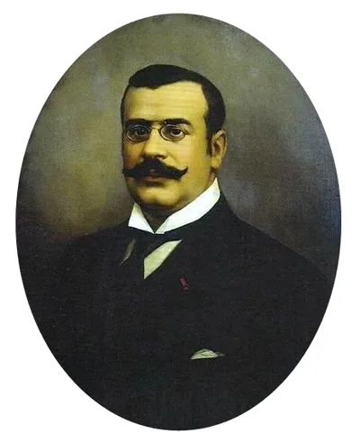
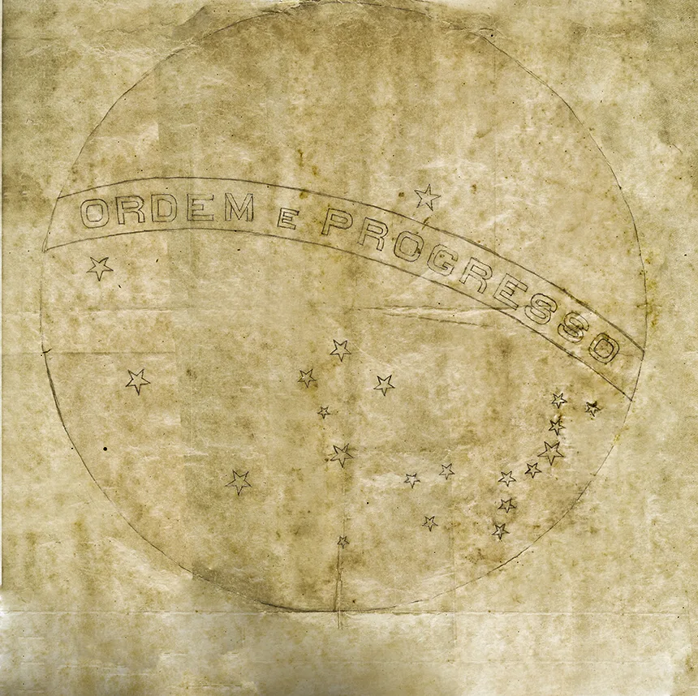
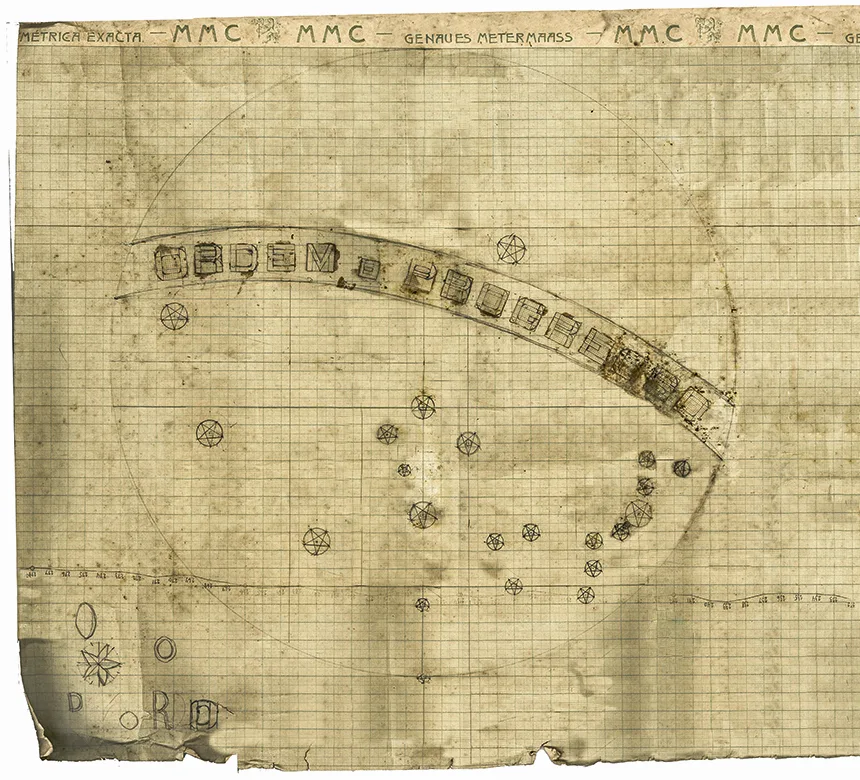
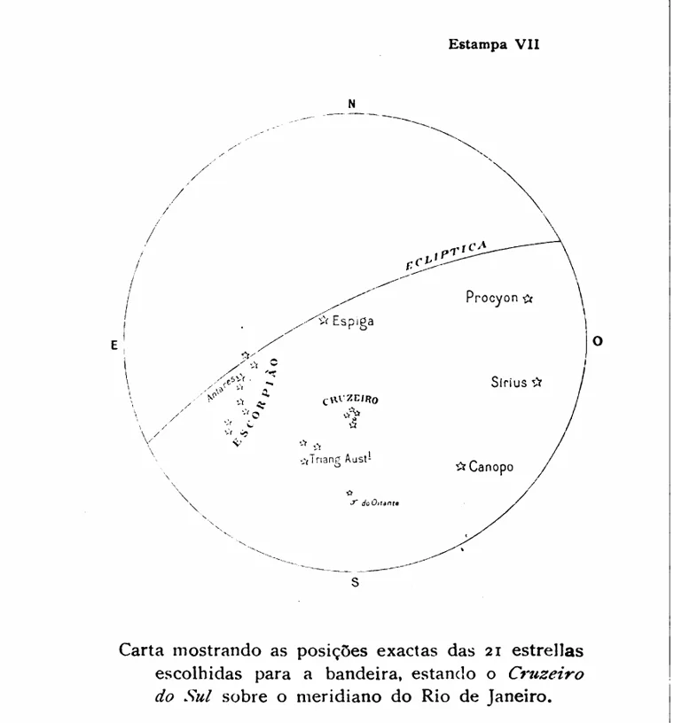
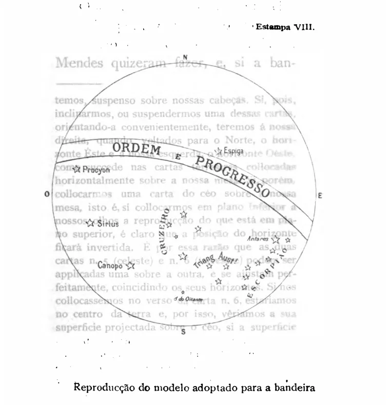

Working paper, version 0.0.7 · No. 00.1 · 24 November 2026
Composed, Not Observed
What the celestial disc of the Brazilian flag carries of the sky over Rio de Janeiro on 15 November 1889, and what its texts supply
Rodrigo Jazinski
Abstract
Brazilian law states that the stars on the national flag correspond to the sky over Rio de Janeiro at 08:30 on 15 November 1889, seen by an observer outside the celestial sphere. This essay asks what the flag’s blue disc carries of that sky, and what is supplied by the texts that accompany it: the decree that adopted the flag, the designer’s explanation, a critique of 1903, the Flag Anthem of 1906, the decree-law of 1942 and the laws of 1968, 1971 and 1992. It computes the sky for the stated moment from a modern star catalogue and measures against it the disc of the official annex of 1992, through a vector construction file checked against the annex.
The stated moment is consistent with the sky: the local sidereal time was 12h 09m, and the stars of the Southern Cross crossed Rio’s meridian between 08:30 and 09:02. All 27 flag stars were above the horizon, but the Sun was 44.5° high, so none could be seen with the naked eye: the flag’s sky was composed, not observed. The disc matches the mirrored sky, as seen from outside, about three times better than the sky as seen from the ground, so the outside view is in the drawing. Within that frame the stars are placed as in a sketch: the median star lies about 10° from its computed place, the Southern Cross is drawn at nearly five times the scale of the disc as a whole, Scorpius is distorted, and Spica, south of the ecliptic in the sky, is drawn above the band. Read back, the disc alone points to a latitude near 59° S, some 36° south of Rio. With the zenith fixed at the disc’s centre, a reading of the 1971 law, it points to latitudes between 11° and 30° S and to a sidereal time near 12h. Controls show why: an exact drawing of the same stars is recovered uniquely, and random errors as large as the drawing’s, and the drawing’s own departures turned to random directions, blur the free search but keep Rio near the top of it; the disc’s departures as drawn, shared by whole constellations, do not. The date cannot be recovered at all.
The designer wrote in 1889 that the disc was not “a chart of the sky, properly speaking”, but “an idealised sky”. The other texts have described it as an astronomical arrangement, a portrait of “this sky”, the sky at a stated minute, and an artistic work. A critic argued in 1903 that the drawing was the reverse of the sky as seen from the ground, as the fits here confirm; from 1968 the law named that reversed view as the one the disc shows. No text examined records a star moved for an astronomical reason, and four drawings, from a facsimile of the 1889 model to the annex of 1992, agree star by star to within 0.14 M of a disc 7 M across, while stars have been added as states were created; the laws of February 1968 and of 1992 provide for removing them, and no text examined records a removal. Its faults have been described by eye since 1903; to the author’s knowledge no earlier account measures the disc against the computed sky, and what the essay adds is measurement and test. It argues that the disc is a representation answerable to two rules, astronomy and the federation, and that what it says about the sky it says jointly with the texts that state its convention.
Keywords: Brazilian flag; national symbols; celestial cartography; positional astronomy; representation; convention; legal texts; Procrustes analysis
Form. This is a single-object study. Its claims are of four kinds, and the essay keeps them apart. Established claims report what a cited text says; they are that text’s claims, not the essay’s verdict on them. Checkable claims follow from calculation or measurement; the scripts and data that produce them are deposited with the essay, and each number in sections 4 to 6 can be regenerated. Proposals are this essay’s readings; where a proposal applies the descriptive frame of section 7 to the flag, it is marked proposal (applied). Hypotheses are stated with what would count against them. Appendix B lists the claims by kind. Quotations from Portuguese are given in the author’s translation, with the original where the wording matters.
Question and method · Section 1
Introduction: a sky no one saw
Teixeira Mendes, the sphere of the flag, 1889 (detail) · Raimundo Teixeira Mendes · Public domain · Wikimedia Commons

At 08:30 local mean time on the morning of 15 November 1889, the day on which the Republic was proclaimed in Rio de Janeiro, the Sun stood 44.5° above the city’s eastern horizon. The 27 stars now on the Brazilian flag were all above the horizon too. None of them could be seen with the naked eye. The sky on the flag is a sky that no one in Rio saw.
That is not a defect. It is a clue to what kind of object the flag’s disc is. A sky that could not be seen had to be worked out, chosen and drawn. Each of those steps fixed something and left something open. This essay asks what each fixed and what it left open.
Seventeen years after the Republic, on 9 November 1906, the Flag Anthem was first performed, with words by the poet Olavo Bilac and music by Francisco Braga (Presidência da República, n.d.; IBGE, 2019, p. 22). Its second stanza tells the flag what it does: “Em teu seio formoso retratas / Este céu de puríssimo azul, / A verdura sem par destas matas, / E o esplendor do Cruzeiro do Sul”, “in your fair breast you portray this sky of purest blue, the matchless green of these forests, and the splendour of the Southern Cross” (Bilac, 1906). Generations of Brazilian children have sung those lines at school; the author sang them every week. They state, in its popular form, the claim this essay examines: that the disc portrays a sky. The anthem turns 120 this month, and the claim it teaches is worth checking.
Words as published by the Presidency (Bilac, 1906; music by Francisco Braga). The recording is the Brazilian Army band, from Domínio Público, the Ministry of Education’s library, on Wikimedia Commons (public domain). The English for the second stanza is the essay’s own; the rest is left in Portuguese.
The claim is narrower than it sounds, and the texts have not always agreed on it. The anthem says the flag portrays “this sky”, the one above the singers. Brazilian law said in 1968, and has said again since 1992, that it shows the sky at one minute of one morning, seen from a point no one can occupy; the law of 1971 left the minute out. The designer, Raimundo Teixeira Mendes, said something more careful in 1889, and a critic, Eduardo Prado, something harsher in 1903. Between them, these texts make a claim that can be checked: that a particular arrangement of 27 stars corresponds to a particular sky. The claim is unusual for a national symbol. It is precise enough to be wrong, and it has been argued about as if it could be.
The essay does three things. It reads the texts that state the claim and shows how their wording has moved (section 3). It computes the sky for the stated moment and place, and measures the disc against it (sections 4 and 5). It then asks the inverse question: given only the disc, could one recover where and when its sky was seen (section 6)? Section 7 describes the disc as a system of rules and the people who apply them, section 8 states what the results show and rule out, section 9 lists the open questions and the tests that would settle them, and section 10 concludes.
Three observations organise the results, and they are stated here so that the reader can check them against what follows. First, the disc’s astronomy holds at the level of selection and rough arrangement, and fails at the level of geometry: the stars are the right ones, all above the horizon, but the median star lies about 10° from its computed place. Second, what the disc carries about place and time, it carries jointly with a convention that the disc does not show. Third, the texts have revised the claim the disc makes, but not the places of its stars: when picture and sky disagreed, the texts changed how they described the picture, whether to answer the critic or to write down a habit of drawing; no text examined moved a star to fit the sky, and four drawings measured from 1889 to 1992 show none moved (section 5.6). The first observation is checkable (sections 4 and 5); the second and third are proposals (Appendix B, C22 and C23).
Why should this matter beyond the flag? Because the disc is a clean case of a general problem. Pictures, maps, diagrams and charts are often said to show the world, and the saying is often done by a text that travels with them: a legend, a caption, a standard. The disc lets one measure how much of what a picture is said to show is in the picture and how much is in the text, and it lets one watch, over a century, what one institution did when the two came apart.
The essay does not retell the political history of the flag’s adoption, which historians of the Republic’s symbols have treated (Carvalho, 1990), and it does not judge the flag as a design. It reports no new astronomical observations. Its computations use published catalogues and standard formulae, and are deposited so that anyone can rerun them.
Question and method · Section 2
Sources, method and limits
This section says where each kind of evidence comes from, so that a reader can tell a reading of a text from a calculation and a calculation from a measurement.
2.1 Texts
Seven texts state or dispute the disc’s claim. They are read here as primary sources.
- Decree no. 4 of 19 November 1889, which adopted the flag (Brasil, 1890). It was read in the transcription of the 1890 official collection on Wikisource and checked against a scan of the printed collection.
- Raimundo Teixeira Mendes’s “Apreciação philosophica”, the explanation of the flag by the positivist leader who presented its design, published in the Diario Official on 24 November 1889 (Teixeira Mendes, 1889). It was read in the reprint in Eduardo Prado’s A bandeira nacional (Prado, 1903, Annexos), not in the original newspaper; each passage quoted here was checked against the printed reprint. The essay calls Teixeira Mendes the designer, as Prado does; secondary accounts associate others with the design (section 9).
- Eduardo Prado’s A bandeira nacional (1903; its introduction is dated Paris, October 1890), a monarchist’s critique of the flag whose chapter on astronomy disputes the disc’s claim point by point. It was read in the Wikisource transcription and checked against two scans of the printed book, which also show its plates: Prado’s stereographic charts of Rio’s sky and his facsimile of the model annexed to the decree (estampa VIII).
- The Flag Anthem (Hino à Bandeira Nacional), words by Olavo Bilac, first performed in 1906 (Bilac, 1906; Presidência da República, n.d.; IBGE, 2019, p. 22). It was read in the text published by the Presidency.
- Law no. 5,443 of 28 May 1968, Law no. 5,700 of 1 September 1971 and Law no. 8,421 of 11 May 1992, which in turn regulated the national symbols (Brasil, 1968b, 1971, 1992). They were read on the Presidency’s legislation site, through archived copies of 2023 and 2024. The 1992 annexes were read in the scanned PDF published with the law: Annex 2, the modular drawing of the flag, and its Appendix 1, which lists the state each star represents.
A further text fixes the drawing without stating the claim. Decree-Law no. 4,545 of 31 July 1942, which governed the national symbols until the 1968 law revoked it, was read in its original publication as reproduced by the Câmara dos Deputados (Brasil, 1942). It confirms the flag of 1889, sets its modular construction and four size classes, fixes some stars against the lettering of the band, and forbids making one face the reverse of the other. It states no date, no hour and no viewpoint for the sky. Its annexes were not seen. Two further texts, read on the Presidency’s legislation site, bear on the federal rule: Decree no. 48,124 of 16 April 1960, which added a star for the State of Guanabara (Brasil, 1960), and Law no. 5,389 of 22 February 1968, which set the number of stars and the criteria for changing it, and which the 1971 law revoked (Brasil, 1968a). The bill that became the law of May 1968 was read in the Diário do Congresso Nacional, with the President’s message, the explanatory statement that accompanied it and the annexes it proposed, among them a modular drawing of the flag and the first official table of stars and states (Brasil, 1967). The complete annexes of the 1971 law were read in the scanned PDF published with it.
2.2 Computation
The sky was computed for Rio de Janeiro at latitude 22° 54′ 24″ S, the value Prado gives, and longitude 43° 10′ 21″ W, which is 2 h 52 m 41 s of time: the longitude west of Greenwich that the 1913 decree introducing legal time gives for the capital (Brasil, 1913). Brazil had no standard time in 1889, so 08:30 is taken as local mean time, 2 h 52 m 41 s behind Greenwich. At a fixed local mean time, an error of one degree in longitude would move the computed sky by only about 10″ of arc.
Star positions come from the Yale Bright Star Catalogue, fifth edition (Hoffleit & Warren, 1991). Each position was moved from 2000 to 15 November 1889 by proper motion and by precession under the IAU 1976 constants (Lieske et al., 1977). Sidereal time and the position of the Sun follow Meeus (1998). Nutation, aberration and atmospheric refraction were not applied. Nutation and aberration are under one minute of arc here; refraction is about 6′ at the altitude of the lowest flag star and less above it. All three are far below the precision of the drawing. Acrux and α Centauri, each a double star listed as two entries in the catalogue, are each treated as one star with the combined magnitude of its components (Acrux, V = 0.76).
To compare the sky with the disc, the sky was projected onto a plane centred on Rio’s zenith, with south at the bottom. Three standard projections were tried: orthographic, stereographic and azimuthal equidistant (Snyder, 1987). Each was tried as seen from the ground and mirrored, as seen from outside the sphere. The projected stars were then fitted to the drawn stars by the least-squares similarity transform, an ordinary Procrustes fit, which allows a shift, a rotation and a change of scale but no other distortion, and no reflection: the mirror is applied to the projected sky beforehand (Gower & Dijksterhuis, 2004). The root-mean-square distance between fitted and drawn stars measures how well a projection matches the disc. Distances are given in modules (M), the law’s unit: one fourteenth of the flag’s height (the law divides the “largura”, literally the width, here the hoist or vertical side, into 14 parts, and makes the flag 20 M long), so that the disc has a radius of 3.5 M.
The computed places at 08:30 on 15 November 1889 (deposited stars file), in the three projections named here, and the drawn stars of the 1992 annex. The fit button runs the same least-squares similarity fit as the deposited script, on the 24 stars of Table 2. Dragging the sliders is an illustration of what the fit does.
The computation is written in Python with no third-party packages, in the script sky_1889.py, deposited with the essay as a plain file and, together with its inputs and the deposited outputs, in the single runnable file flagsky_code_v0_0_7.py, which reruns the computation and checks the results against the deposited files. It writes every number quoted in sections 4 to 6 to the deposited summary file, flagsky_summary_v0_0_7.txt.
2.3 Measuring the disc
The positions analysed are those of a vector construction file of the flag published on Wikimedia Commons (Wikimedia Commons, n.d.), checked against the scanned Annex 2 of the 1992 law. A second script, measure_annex.py, measured the centre of each star on the scan. After scaling and rotation, the two sets of positions agree to 0.04 M (root-mean-square), and the largest difference, for Alphard, is 0.07 M. That is about a tenth of the typical distance between a drawn star and its computed place (section 5), so the construction file is an accurate enough copy of the 1992 annex for every comparison in this essay.
Dimensions as stated in this essay: the flag 14 M by 20 M, the disc of radius 3.5 M, the band between arcs of radii 8 M and 8.5 M centred 2 M left of the point where the vertical diameter, extended, meets the lower edge (section 5.4). Star positions and sizes from the construction file. A construction diagram, not the flag: the rhombus and the lettering are left out.
Annex 2 names each star and gives its size class, but three stars of Scorpius share a size class and sit close together. Their identities were read from the order of the annex’s leader lines, taken without crossings. As a check, they were also assigned to the computed places that fit best; the two methods agree. The 24-star fits of section 5.1 leave these three stars out, so the assignment does not depend on the fit it is checked against; the 27-star fit of section 5.2, on which the residuals of Appendix A rest, uses it.
2.4 Limits
The original newspaper of 1889 was not seen. The lithograph annexed to the 1889 decree survives, in the only digital copy found, as a scan in which the stars cannot be read (Brasil, 1890); it is known here through Prado’s redrawn facsimile, which section 5.6 measures against the 1992 annex. The annexes of the 1942 decree-law, of the 1960 decree and of the 1968 law as enacted were not found; those proposed with the bill of 1967 and those of the 1971 law were read. The assignment of stars to states in Appendix A is that of the 1992 annex; the earlier assignments are those of the table annexed to the bill of 1967 (Brasil, 1967). The years in its “Since” column are those of the texts that added a star: the decree of 1960, the law of 1968, whose bill named the stars for Guanabara and Acre, and the law of 1992. The author has not consulted Brazilian archives, and is not a historian of the Republic or of Brazilian positivism; the essay treats the texts only for what they say about the disc.
2.5 Earlier readings of the disc
Most of the disc’s qualitative faults were named long ago. Prado (1903) drew stereographic charts of Rio’s sky with the Cross on the meridian, and printed the official design on transparent paper so that the reader could turn it over, allowing for the reversal, and lay it on his chart: “neither the stars nor the ecliptic coincide” (“nem as estrellas, nem a Ecliptica coincidem”). He named the reversal, the misplaced stars, the misdrawn band and the omission of α and β Centauri. Modern popular accounts repeat several of these points. José Roberto V. Costa’s articles of 2002 for Astronomia no Zênite explain the outside view as that of a celestial globe “nas mãos de um artista” and note that the flag’s sky is a daytime sky in which no star could be seen (Costa, 2002a, 2002b). The first adds that the stars of Scorpius are so misplaced that they cannot all be identified (Costa, 2002a). The Flags of the World page on the flag’s astronomy collects similar comments (Flags of the World, 2019). Paulo Araújo Duarte, for the planetarium of the Federal University of Santa Catarina, explains the outside view and the moment of 08:30 (Duarte, n.d.). The Observatório Nacional’s booklet A Nossa Bandeira prints a chart of the sky at 08:30 beside the flag and calls the disc’s sky “invertido” (Observatório Nacional, n.d.). Ronaldo Rogério de Freitas Mourão, endorsing Prado, notes that two Brazilian star charts of the time, Manuel Pereira Reis’s O Céu (1887) and Luiz Cruls’s Atlas Celeste (1896), still drew the sky as on a globe, from outside, and that the national arms draw the Cross the other way round from the flag, with its fifth star, ε Crucis, on the right (Mourão, 2007). None of these accounts measures the disc against the computed sky. Bordeleau (2014) gives a chapter of his book on flags and the night sky to Brazil; only its abstract could be read, which describes the flag as “a sky chart of the sky over Brazil on November 15”.
Prado’s overlay was a judgement by eye. Reading a latitude, an epoch or a date from a depicted sky has a literature of its own, on the constellations of Greek astronomy and on illustrated manuscripts (for example Schaefer, 2002, 2005; Mostert & Mostert, 1990); none of it has been applied to the flag. What this essay adds is measurement and test: the size of the mirror effect, the residual of each star and each constellation, the displacement of Spica in modules and degrees, the inverse search of section 6 with its controls, the measurement of four drawings of the disc from 1889 to 1992 (section 5.6), and a reading of the texts from 1889 to 1992 as successive statements of one claim, including the decree-law of 1942, which wrote the drawing’s placements into law a generation before any law said which sky the disc shows. It also corrects a small point. Costa gives the clock time of 12 sidereal hours as 8h14 in one article and 8h37 in another (Costa, 2002a, 2002b). In Rio’s local mean time it was 08:21; 8h14 is the same instant in the modern legal time of Rio (three hours behind Greenwich).
The texts · Section 3
Five statements of one claim
Eliseu Visconti, Hino à Bandeira (detail) · Eliseu Visconti · Public domain · Wikimedia Commons

The disc’s claim has been stated in different ways at different dates: in 1889, by the decree and by its designer, and in 1906, 1968, 1971 and 1992. Prado’s critique is read beside them. This section sets them side by side, because the way the claim was worded at each date decides what would count as the disc being right.
3.1 1889: an astronomical arrangement, and an idealised sky
The decree that adopted the flag describes the disc in one sentence. The blue celestial sphere is “dotted with twenty-one stars, among them those of the constellation of the Cross, arranged in their astronomical situation as to relative distance and size, representing the twenty States of the Republic and the Neutral Municipality” (Brasil, 1890, art. 1). The decree names no date, hour, place or viewpoint. Its standard is relative: distances and sizes, not positions in a stated sky. Prado would read the same clause more strictly, as an order that the stars appear “in their astronomical positions” (“nas suas posições astronomicas”; Prado, 1903, Astronomia).
_(cropped).jpg){kind=link}
Teixeira Mendes’s explanation, published five days later, is more careful. “It was not a matter of constructing a chart of the sky, properly speaking. It was necessary to figure an idealised sky, that is, to compose an image that would evoke in our minds the aspect of our sky, as well as the feelings that our poetic evolution has attached to such an image” (Teixeira Mendes, 1889; “não se tratava de construir propriamente uma carta do céo. Era preciso figurar um céo idealisado”). He then states the rules of the idealisation, which, he says, “aesthetic and even scientific relativism” lays down (“O relativismo esthetico e, mesmo, scientifico traça as regras”). The sphere was drawn “inclined over the horizon, according to the latitude of Rio de Janeiro”, and the south pole marked by σ Octantis, “which became the natural symbol of the Neutral Municipality”. The constellations chosen were southern, except for Canis Minor, which supplied Procyon “to signify that the Brazilian Union has a State that extends into the northern hemisphere”.
He also says where the idealisation departed from the sky, and why. Spica is drawn above the ecliptic “to break the monotony of the boreal hemisphere”. Procyon could not be placed there, because its constellation lies south of the ecliptic. “Aesthetic liberty, on the contrary, permitted Spica to be placed above the band representing the Zodiac”, because Virgo has parts on both sides of the plane of the Earth’s orbit, and a small change in that plane’s inclination would carry the star to its north. He adds at once: “But it was drawn next to the band” (“Mas ella foi representada junto da faixa”; Teixeira Mendes, 1889).
Elsewhere in the same text the moment is given only as the one at which the Southern Cross is on the meridian. No hour appears in the passages that Prado reprints, and 15 November appears only as the day on which the old flag ceased to serve (“até o glorioso 15 de novembro”), never as the date of the sky.
3.2 1903: the reverse of the sky
Prado read Teixeira Mendes’s explanation as a list of propositions and answered each. He wrote in Paris in October 1890; the book appeared only in 1903 (Prado, 1903, Introducção). He states the first proposition without Teixeira Mendes’s word “idealised” (“A bandeira representa o aspecto do céo do Rio de Janeiro”), and he speaks of “the moment chosen by the decree”, though only the explanation names one. His first answer is the strongest. The flag, he writes, “does not represent the aspect of the sky of the capital of Brazil, neither when the constellation of the Southern Cross is on the meridian, nor at any moment” (Prado, 1903, Astronomia). The reason he gives is technical. The designer had worked from a celestial globe, not from a chart of the sky. A person looking at a globe sees the sphere from outside, so the globe shows the sky reversed, with east and west exchanged. The disc is therefore “positively the reverse of the sky” (“positivamente o avêsso do céo”).


Prado did not stop at the reversal. Even allowing it, he writes, neither the positions nor the sizes of the stars are right, and the band meant to represent the ecliptic is wrongly drawn. He notes what the disc leaves out: α and β Centauri, two first-magnitude stars beside the Cross. He mocks the claim that Procyon stands for a state extending into the northern hemisphere: Pará and Amazonas both did, so two northern stars were needed, and they could have been Regulus, Arcturus, Castor or Pollux. And he proposes a better moment for an astronomical flag, when η Argus crosses the meridian and Orion is up, and all 21 stars could be bright and visible, with others as bright left over (Prado, 1903, Astronomia).
Prado was a monarchist and an opponent of the Republic, and his chapter is polemic as well as astronomy. Its astronomical claims can nevertheless be checked, and sections 4 and 5 check them.
3.3 1906: “this sky”
Three years after Prado’s book appeared, the Flag Anthem gave the claim the form in which many Brazilians learned it. The flag “portrays” (retratas) “this sky of purest blue” and “the splendour of the Southern Cross” (Bilac, 1906). The verb is that of portraiture, and the sky is the one above the singers: este céu, as the forests are destas matas, “these forests”. The anthem names no moment and no viewpoint; it does not need to. It is not a rule for drawing the disc. It is the reading of the disc that schools would teach, though the law does not say what the flag means. The decree-law of 1942 already required every school to raise the flag solemnly at least once a week and to teach “the drawing of the National Flag” (Brasil, 1942, arts. 14 and 38), and the 1968 law kept both duties (Brasil, 1968b, arts. 13 and 38). The 1971 law added its meaning: primary and secondary schools must teach “the drawing and the meaning of the National Flag”, and every school must raise it solemnly at least once a week in the school year (Brasil, 1971, art. 14, sole paragraph, and art. 39).
3.4 1968, 1971 and 1992: a stated minute, an artistic work, a stated minute again
The 1968 law is the first text read here to give the disc a date and an hour. “The constellations that appear on the National Flag correspond to the aspect of the sky, in the city of Rio de Janeiro, at 8 hours and 30 minutes on 15 November 1889 (12 sidereal hours) and must be considered as seen by an observer situated outside the celestial sphere” (Brasil, 1968b, art. 3, § 1). A second paragraph governs new states: they are to be represented by stars “that make up the aspect [of the sky] referred to”, so as to fit them into the disc “without affecting the original aesthetic arrangement” of the 1889 design (§ 2). The same article says that the flag may be “updated whenever new States are created”. The law also keeps, from the decree-law of 1942 (Brasil, 1942, art. 6, XI), some placements against the lettering of the band: Spica, “above the white band, corresponds to the third letter of PROGRESSO”; Procyon lies under the O of ORDEM; the rightmost star of Scorpius under the last letter of PROGRESSO; and σ Octantis, α and γ Crucis and the letter P lie on the vertical diameter (art. 5, XI). Its rule for the two faces of the flag, also kept from 1942 (art. 6, X), names what the disc shows: “the Scorpion on the right, the Southern Cross in the middle, Procyon, Sirius and Canopus on the left”, and “it is forbidden to make one face as the reverse of the other” (art. 5, X).
The 1971 law replaced this with a different description. “On the National Flag is represented, as an artistic work, an aspect of the sky of Rio de Janeiro, with the constellation of the Southern Cross on the meridian, idealised as seen by an observer placed on the vertical that contains the zenith of that city, on a sphere outside the one seen on the Flag” (Brasil, 1971, art. 3, sole paragraph, original wording; “em lavor artístico … idealizado”). The date and the hour are gone, and so is the clause that let the flag be updated: the law declared the flag and the national anthem “inalterable” (“inalteráveis”; art. 1, original wording). The word “idealised” returns, Teixeira Mendes’s own, and “artistic work” stands close to his “aesthetic liberty”. The placements against the lettering, and the list of what each face shows, are no longer in the text of the law. The rule against making one face the reverse of the other stays (art. 5, X). And the law adds a fifth size class, of a tenth of a module, for a single star, “the one of fifth magnitude”; the 1942 decree-law and the 1968 law had four classes, the smallest of 0.14 M (Brasil, 1942, art. 6, IX; 1968b, 1971, art. 5, IX). In the 1992 annex that star is σ Octantis. The drawing had it first: the annex proposed with the bill of 1967 already marks σ Octantis as of the fifth class, though the bill’s text, like those of 1942 and 1968, allowed only four (Brasil, 1967, Annex 2).
The 1992 law restored the 1968 paragraphs on the sky and on new states almost word for word. It restored the updating clause too, and turned the permission of May 1968 (“podendo ser atualizada”) into a duty (“devendo ser atualizada”): the flag is to be “updated whenever States are created or abolished”. It added a third paragraph: the stars of states that are abolished are removed, and a state formed by fusion keeps the star designated for it, in every case without affecting the original aesthetic arrangement. It replaced four of the 1971 annexes (nos. 1, 2, 8 and 9) with new ones; in Annex 2 the flag has 27 stars, and Appendix 1 to that annex gives the state each star represents (Brasil, 1992, arts. 1 and 2, amending arts. 1 and 3 of the 1971 law).
Three things follow from this sequence. The first is that the law, unlike the decree of 1889, which pointed only to an annexed model, speaks of the disc twice over in its own text: once as a drawing, with modules, classes and placements, and once as a claim about the sky. The second is that the 1971 law’s “artistic work” was not a passing phrase. For more than twenty years the statute described the disc as an idealised picture, and the stated minute was absent from the law. The third is that the law of 1968, and again that of 1992, fixed the sky as a reserve. Any future star must come from “the celestial aspect referred to” (Brasil, 1992, art. 3, § 2), the sky of 08:30 on 15 November 1889. The sky of that one morning became the only place from which the federation may draw new members of the disc.
3.5 What moved
Table 1 sets the descriptions side by side.
Table 1. How the disc’s claim has been stated.
| Text | Standard the disc is held to | Moment | Viewpoint | Aesthetics named |
|---|---|---|---|---|
| Decree no. 4, 1889 | “astronomical situation as to relative distance and size” | not stated | not stated | no |
| Teixeira Mendes, 1889 | “an idealised sky”, not “a chart of the sky” | Southern Cross on the meridian | sphere inclined for Rio’s latitude | yes: “aesthetic liberty” |
| Prado, 1903 (critic; written 1890) | the aspect of the sky, and the disc fails it | Southern Cross on the meridian, “nor at any moment” | from the Earth; the disc is “the reverse of the sky” | no standard of his own; calls the disc unaesthetic (“inesthetica”) |
| Flag Anthem, 1906 | “portray … this sky” | not stated | not stated | no |
| Decree-Law 4,545, 1942 | the flag of 1889, by modular rules, with stars placed against the lettering | not stated | not stated | no |
| Law 5,443, 1968 | “correspond to the aspect of the sky” | 08:30, 15 November 1889, 12 sidereal hours | “an observer situated outside the celestial sphere” | yes: new stars must not affect “the original aesthetic arrangement” |
| Law 5,700, 1971 (original) | “as an artistic work, an aspect of the sky”, “idealised” | Southern Cross on the meridian | “on the vertical that contains the zenith”, “on a sphere outside” | yes: “artistic work” |
| Law 8,421, 1992 | as in 1968 | as in 1968 | as in 1968 | as in 1968, and binding removals too (§ 3) |
Rows from Table 1; the quotations are the essay’s. The flags are the official designs as redrawn on Wikimedia Commons (public domain), shown whole: 21 stars from 1889, 22 from 1960, 23 from 1968, 27 since 1992, as in Appendix A. The two tracks follow the essay’s reading of correspondence and evocation (a proposal).
Two movements stand out (proposal). The first is between two standards. The claim has swung between correspondence (“the aspect of the sky”, “astronomical situation”, “portrays”) and evocation (“idealised”, “an artistic work”), and the current law holds both at once: the stars correspond to the sky, and new stars must not disturb the aesthetic arrangement. Neither standard has displaced the other; they are layered.
The second movement is in the viewpoint. In his chapter on astronomy, Prado’s charge had two heads: that the disc shows the sky as seen from outside, and is therefore the reverse of the real sky; and that, even granting this, its stars and band are misplaced. The 1889 decree had said nothing about a viewpoint. From 1968 the law says that the disc shows the sky as seen from outside, and is therefore right on the first head. The reversal Prado named as an error became, in the law, the specification of the view. Nothing in the law corrects the second head; the law met it only by writing the existing placements down, in 1942 and again in 1968 (section 7.3). Two readings of the viewpoint clause are possible, and the texts examined do not decide between them. The 1968 wording may answer the critic, or it may simply write down the practice of a designer who worked from a globe. On either reading the outcome is the same: a feature of the drawing that could have been counted against it was written into the description, and the description, not the drawing, now carries it. The essay claims only that the wording does this work, not that its drafters intended it.
The two movements are the essay’s first evidence for the third observation of section 1. Over a century, the claim was restated four times after 1889: in 1906, 1968, 1971 and 1992. Stars were added as states were created, but no text examined moved a star already drawn to fit the sky.
The sky · Section 4
The sky at 08:30 on 15 November 1889
Eduardo Prado, A bandeira nacional, estampa VII (detail) · Eduardo Prado · Public domain · Wikimedia Commons
This section computes the sky for the moment the law names, and checks the claims of section 3 that can be checked against it. All claims in this section are checkable. They matter because each text in section 3 makes a claim about this sky, and the computation is the only witness that is neither party to the dispute nor dependent on the drawing.
4.1 The moment
Sidereal time is time kept by the stars. The Earth turns once relative to the stars in 23 hours 56 minutes, about four minutes less than the solar day. The local sidereal time at a place is the right ascension, the sky’s equivalent of longitude, of the stars then crossing its meridian, the line that runs from due south through the zenith to due north. At 12 sidereal hours, the stars of right ascension 12h stand on the meridian at Rio, at their highest. The law therefore names the sky in two ways. “8 hours and 30 minutes on 15 November 1889” is a moment on the clock; “12 sidereal hours” says which part of the sky is on the meridian, whatever the date. The two are tied together only by the date: on 15 November the Sun stood at right ascension 15h 24m, so at 12h 09m sidereal it was still 3h 15m east of the meridian, and the hour was in the morning.
At 08:30 local mean time the local sidereal time at Rio was 12h 09m. It had been exactly 12h at 08:21. The law’s “12 sidereal hours” therefore matches its “8 hours and 30 minutes” to within nine minutes. In 1889 the five stars of the Cross had right ascensions between 12h 09m (δ Crucis) and 12h 41m (Mimosa), so they crossed the meridian one after another: δ Crucis at 08:30, ε at 08:36, Acrux at 08:41, Gacrux, the top of the Cross, at 08:46 and Mimosa at 09:02. The long axis of the Cross, from Gacrux to Acrux, stood exactly vertical, Gacrux directly above Acrux at the same azimuth, at 08:58. The stated hour and the description “the Southern Cross on the meridian” thus agree to within about half an hour. The moment is consistent with the sky: at 08:30 δ Crucis was on the meridian, but the Cross as a whole was not.
Star places for 15 November 1889 from the deposited stars file (the 27) and from the Yale Bright Star Catalogue through the deposited script’s own precession (stars to magnitude 5); the Sun by the same low-precision series (Meeus). Zenith-centred stereographic view, south at the bottom; no refraction. The sky colour is a schematic of daylight, twilight and night by the Sun’s altitude.
4.2 Daylight
The Sun had risen at 05:08 (upper limb, with standard refraction; the altitudes in this section are without refraction). At 08:30 it stood 44.5° above the horizon, almost due east (azimuth 94°). No star on the flag could be seen with the naked eye: in full daylight even the brightest, Sirius (magnitude −1.5), stood only 13° up in the west-south-west. The four flag stars nearest the Sun were all in Scorpius, β Scorpii nearest at 8.4°; the eight stars of Scorpius lay between 8° and 36° from it. The constellation that supplies eight of the flag’s 27 stars, more than any other, lay in the glare of a morning sun. The law has the flag raised at eight in the morning on ordinary days (Brasil, 1971, art. 15, § 1): within half an hour, by the clock, of the minute its stars stand for, and in a sky in which none of them can be seen.
Angular distances from the deposited stars file (column sun_sep).
4.3 What was above the horizon
All 27 stars on the flag were above the horizon at 08:30. The lowest, Mirzam (β Canis Majoris), was 8.8° up in the west-south-west. This includes the six stars added since 1889 (Appendix A), among them the four that first appear in the 1992 annex, so the condition the law sets for new stars, that they belong to the same aspect of the sky, is met.
Several bright stars that were also above the horizon are not on the flag. Of the stars of magnitude 1.5 or brighter, five are left out: α Centauri (45° up), β Centauri (49°), Arcturus (38°), Regulus (43°) and Pollux (7°). Prado named all five, and Castor besides: the two Centauri as stars left out, the other three among the northern stars the flag could have used (section 3.2). Nor does the flag show the Sun, the Moon or any planet; the positions of the Moon and the planets that morning were not computed for this essay.
4.4 Spica, Procyon and the hemispheres
Two great circles divide the sky, and the texts use both. The celestial equator, the Earth’s equator carried out onto the sky, divides it into a northern and a southern hemisphere; a star’s declination is its angle north or south of it. The ecliptic, the Sun’s yearly path among the stars, is tilted about 23½° to the equator; a star’s ecliptic latitude is its angle from it, and the zodiac is the belt of constellations along it. The flag’s white band stands for the zodiac: Teixeira Mendes calls it the band “representing the Zodiac”, and the motto ORDEM E PROGRESSO is written along it. Two questions about each star are therefore distinct. Which hemisphere it belongs to bears on the federation, since a star north of the equator could stand for a state that reaches into the north. Which side of the ecliptic it lies on decides whether, by the sky, it should be drawn above the band or below it. The designer answered both questions for Spica and Procyon, and his answers can be checked.
Spica lay at declination −10.6° and ecliptic latitude −2.05°. It was south of the celestial equator and, by about two degrees, south of the ecliptic. Teixeira Mendes’s description is accurate on both counts: Spica belongs to the southern sky, and it lies so close to the ecliptic’s plane that a tilt of that plane by little more than two degrees would carry it across. Procyon lay at declination +5.5°, the only flag star north of the celestial equator, and at ecliptic latitude −16.0°, well south of the ecliptic. His reason for not placing Procyon above the band also checks out: Gomeisa, the other bright star of Canis Minor, lay 13.5° south of the ecliptic. One flag star did lie north of the ecliptic, by 1.0°: β Scorpii. Prado had said as much: placed by the sky, β Scorpii would have stood above the ecliptic “naturally, and without effort or aesthetic liberty” (Prado, 1903, Astronomia; “naturalmente, e sem esforço, nem liberdade esthetica”). Costa (2002a) makes the same point: were the band the ecliptic, β Scorpii would lie above it. On the flag it is drawn 0.68 M below the band’s centre line. Spica is the only star drawn above it. So the band divides the drawn stars as the ecliptic divides the sky, with two exceptions that mirror each other: Spica, south of the ecliptic, is drawn above the band, and β Scorpii, north of it, is drawn below.
Declination and ecliptic latitude from the deposited stars file. Above or below the band: each drawn star’s distance from the band’s centre line (radius 8.25 M about the centre the law gives), from the construction file; Spica 0.40 M above, β Scorpii 0.68 M below, as in sections 4.4 and 5.4.
4.5 The same sky at night
A configuration of stars fixes sidereal time, not the date. Because the sidereal day is about four minutes shorter than the solar day, the sky of the flag, at 12 sidereal hours, returns every day about four minutes earlier by the clock, and in a year it passes through every hour of the day and night. In 1889 the local sidereal time reached 12h over Rio at 00:05 on 21 March, at 21:59 on 21 April and at 20:01 on 21 May; the sky of 08:30 itself, at 12h 09m, returned at 00:14, 22:08 and 20:10 on those dates. Figure 1 follows it through the whole year. From 21 January to 12 June 1889, on 143 nights, it stood over Rio in full darkness, with the Sun more than 18° below the horizon. From July to December it fell in daylight, and on 15 November it fell at 08:30 in the morning, with the Sun 44.5° high. The flag’s sky is a sky of the nights of late summer and autumn in Rio. The law dates it to a morning in spring, when it could not be seen.
Each day’s time and the Sun’s altitude from the deposited recurrence file. The original figure is deposited with the paper: SVG on Zenodo.

Figure 1. When the flag’s sky stood over Rio de Janeiro in 1889. For each day, the local mean time at which the sidereal time of 08:30 on 15 November (12h 09m) returned, coloured by the altitude of the Sun at that moment: dark night (Sun more than 18° below the horizon), twilight, or daylight. Noon is at the top and the bottom of the scale, midnight in the middle. Circles: the moment the law names, and 22:08 on 21 April.
This is also why the anthem can be right. The anthem’s “this sky” is true in a way its author may not have meant: the stars of the disc are the stars a Rio schoolchild could see on an April night, not on the November morning the law names.
The disc · Section 5
The disc against the sky
Eduardo Prado, A bandeira nacional, estampa VIII (detail) · Eduardo Prado · Public domain · Wikimedia Commons
This section measures how closely the drawing matches the sky of section 4. The measurements are checkable; the readings of them are marked.
5.1 The mirror
The six fits in Table 2 make a strong case for the outside view. Seen as from the ground, the best fit leaves a root-mean-square distance of about 1.5 M between drawn and computed stars, and it does so only by turning the sky through about 160°. A half-turn exchanges east and west, as a mirror does, but also puts south at the top: it is the nearest that rotation alone can come to a mirror image. Mirrored, as seen from outside the sphere, the distance falls to about 0.5 M, with south at the bottom and a rotation of a few degrees. The mirrored sky fits about three times better. The result does not depend on centring the projection on the zenith: with the centre left free and every latitude and sidereal time searched (section 6), the best unmirrored fit of all 27 stars anywhere is 1.45 M, against 0.38 M for the best mirrored one. The outside view is in the drawing itself, as Prado said, and not only in the law’s description of it. Because Prado saw this by eye, the result is also a calibration: the method finds what was known before it is trusted with what was not. The same law draws the Cross both ways: mirrored on the flag, and as seen from the ground on the national arms in its annex (Brasil, 1992, Annexes), a contrast Mourão (2007) had noted between flag and arms.
Table 2. Fits of the projected sky to the disc (24 of the 27 stars: ι, κ and μ Scorpii, whose identities on the drawing are settled only by the leader lines, are left out; zenith-centred projections; similarity transform).
| Projection | View | RMS distance (M) | Share of disc radius | Rotation |
|---|---|---|---|---|
| Orthographic | from the ground | 1.532 | 44% | 161° |
| Orthographic | from outside (mirrored) | 0.567 | 16% | −2° |
| Stereographic | from the ground | 1.507 | 43% | 162° |
| Stereographic | from outside (mirrored) | 0.505 | 14% | −3° |
| Azimuthal equidistant | from the ground | 1.514 | 43% | 162° |
| Azimuthal equidistant | from outside (mirrored) | 0.514 | 15% | −3° |
Each fit recomputed in your browser from the deposited star places with the least-squares similarity transform of section 2.2, on the 24 stars of Table 2; its rms distance must equal the table’s.
5.2 A sketch, not a projection
The three mirrored projections fit almost equally well. The disc barely distinguishes between them, and so cannot be said to follow any one of them. Fitting all 27 stars to the mirrored stereographic projection leaves a root-mean-square distance of 0.52 M and a median of 0.46 M. Carried back through the fit onto the sky, the drawn stars lie a median of 9.6° from their computed places (mean 10.8°; largest 28.2°, for Spica). Near the centre of the disc one module corresponds to about 30° of sky, but a module spans fewer degrees towards the rim, where most stars are drawn, so the conversion must be made star by star. Under the same fit the horizon falls at a radius of 3.78 M, just outside the disc’s rim, and the zenith falls 0.38 M from its centre. The disc shows, roughly, the whole sky above Rio’s horizon, centred near the zenith, mirrored. Within that frame the stars are placed approximately. Figure 2 shows each drawn star with its computed place.
Drawn positions from the construction file, computed places under the 27-star fit, residuals, and the ecliptic and equator, all from the deposited data files. The slider moves each star from its drawn place towards its computed place: an illustration of the residuals, not a proposed drawing. The original figure: SVG on Zenodo.

Figure 2. The flag’s disc against the computed sky. Filled stars: the 27 stars as drawn in Annex 2 of Law 8,421 of 1992 (positions from the construction file checked against it; section 2.3), sized by class. Open circles: their computed places at 08:30 local mean time on 15 November 1889 at Rio de Janeiro, in a mirrored, zenith-centred stereographic projection, after the best 27-star similarity fit. Lines join each star to its computed place. Dashed: the ecliptic; dotted: the celestial equator, under the same fit. East is on the right because the view is mirrored.
5.3 The constellations
Fitted on their own, the constellations show what the global fit averages away (Table 3). The Southern Cross keeps its shape well, with an error of 8% of its own spread, but it is drawn 4.7 times larger than the scale of the disc as a whole would make it. Teixeira Mendes said the Cross was “conveniently set off” (“convenientemente destacado”); the measurement gives the size of that emphasis. Canis Major keeps its shape (13%) at one and a half times the scale. Triangulum Australe is enlarged by the same factor; its shape error (32%) means little for three stars, since about one random triangle in five fits as well. Scorpius is barely enlarged, but its shape error is 51% of its own spread, and its best fit turns it by 41°. Prado wrote that the stars of Scorpius were so misplaced that the printed flag alone could not tell which they were (Prado, 1903, Astronomia: “não é possivel, pela estampa, verificar quaes sejam”). His own guess, from the north, was β, δ, α, τ, ε, μ, λ and κ (p. 36 of the printed edition; the transcription has χ for κ). The 1992 annex names β, α, ε, λ, θ, ι, κ and μ: the two lists share six stars, and Prado has δ and τ where the annex has θ and ι. Whether he misread the printed flag or it showed other stars is part of open question 1. The measurement, made on the 1992 annex, agrees that the drawn group does not keep the constellation’s shape.
Table 3. Each constellation fitted on its own, against the 27-star fit. Scale and turn are those of the group’s own best fit relative to the whole-disc fit. For comparison, random placements of the same number of stars, uniform in the disc, fitted in the same way and measured against their own spread, give median shape errors of 80% and 81% (five stars: Crux, Canis Major), 49% (three) and 93% (eight).
| Constellation | Stars | Scale against the whole disc | Shape error (share of the group’s spread) | Turn against the whole disc |
|---|---|---|---|---|
| Crux | 5 | ×4.7 | 8% | +16° |
| Canis Major | 5 | ×1.5 | 13% | −2° |
| Triangulum Australe | 3 | ×1.5 | 32% | −17° |
| Scorpius | 8 | ×1.1 | 51% | −41° |
Each group fitted on its own by the same similarity transform (reflection allowed), against the 27-star fit, as in Table 3. Random placements: points uniform in the disc, fitted the same way, generated in your browser (seed shown); the essay used 2,000 with Python’s generator, so the counts can differ slightly from Table 3’s note.
The six stars furthest from their computed places are Spica (1.01 M), β Scorpii (0.99 M), Gacrux (0.86 M), ι Scorpii (0.83 M), δ Crucis (0.77 M) and Mimosa (β Crucis, 0.62 M). Three of them belong to the Cross, whose enlargement pushes its outer stars away from the places a uniform scale would give them.
The two kinds of error suggest different treatments (proposal). The Cross is right in shape and wrong in size: it has been enlarged as a whole, as a figure is when it must stand out. Teixeira Mendes’s “conveniently set off” names the effect; the measurement gives its size. Scorpius is nearly right in size and wrong in shape, though far less wrong than chance: eight stars placed at random in the disc give a shape error near 93% of their spread, and none of 2,000 such placements does as well as the drawing. Its stars have been kept roughly in their figure and rearranged to suit the composition. They are eight of the twenty-one of 1889, and Prado had already called Scorpius the dominant constellation, which “alone supplied more than a third” of the stars (Prado, 1903, Astronomia). One constellation is emphasised, the other is spent. Neither departure looks like random error: section 6.4 shows that random errors of the same size mislead the reading far less than these do. Both answer to the picture rather than to the sky.
5.4 Spica and the band
Under the fit, Spica’s computed place lies 0.59 M below the centre line of the white band, on its southern side. On the flag it is drawn 0.40 M above that line. In the 1992 annex it stands on the band’s upper edge, which its lowest point touches, about one module from where the fit would put it and 28° from its place on the sky. That fits both of Teixeira Mendes’s phrases: drawn above the ecliptic, and “next to the band”. The law had written the placement down since 1942: Spica “above the white band” (Brasil, 1942, art. 6, XI; 1968b, art. 5, XI).
As Figure 2, centred on Spica and the band; the dashed line is the projected ecliptic, the dotted line the celestial equator.
The band itself follows neither great circle closely. Inside the disc, the projected ecliptic runs from 0.84 M below the band’s centre line to 0.47 M above it, and the projected celestial equator from 0.99 M below to 0.41 M above. The band is 0.5 M wide, between arcs of radii 8 M and 8.5 M centred 2 M left of the point where the disc’s vertical diameter, extended, meets the flag’s lower edge (Brasil, 1971, art. 5, V–VII). Its arc has the general direction of both and the course of neither. Teixeira Mendes called it the band “representing the Zodiac”; Prado said it was wrongly drawn (Prado, 1903, Astronomia). The band is better read as a sign of the ecliptic than as a projection of it (proposal).
5.5 Sizes
The law draws stars in five size classes, from first to fifth magnitude. Against catalogue magnitudes, the classes are well ordered: the rank correlation is 0.91. Of the 263 pairs of stars drawn in different classes, eight are inverted, with the brighter star drawn smaller, and all eight involve one star. Adhara (ε Canis Majoris), of magnitude 1.50, is the eighth brightest of the 27 but is drawn in the third class, below eight fainter stars of the second. Adhara first appears in the 1992 annex. Among the 21 stars of 1889 alone, no pair is inverted, and the rank correlation is 0.96. The texts examined do not say why it was given the third class (section 9).
Classes from the 1992 annex and V magnitudes from the deposited stars file; the rank correlation is computed in your browser by the deposited script’s formula (Spearman, ties averaged).
The fifth class has a single member, σ Octantis, of magnitude 5.5, the faintest star on the flag and the one Prado called “invisible to the naked eye” (Prado, 1903, Astronomia). The class was created by the 1971 law (section 3.4); the decree-law of 1942 and the law of 1968, which both name σ Octantis among the disc’s stars, had only four classes, the smallest 0.14 M across, so a drawing that followed them could not show the pole star in the 0.10 M class of 1971 (Brasil, 1942, art. 6, IX and XI; 1968b, art. 5, IX and XI). But the annex proposed with the bill of 1967 already drew σ Octantis in a fifth class (Brasil, 1967, Annex 2). By then the drawing did not follow its own text, and the law of 1971 brought the text into line with the drawing. On Prado’s facsimile of the 1889 model it is already the smallest star (section 5.6), so only the drawing of 1942 could still show it larger (section 9).
5.6 Four drawings, one arrangement
Everything above is measured on the drawing of 1992. Three earlier drawings could be measured by the same method: Prado’s facsimile of the model annexed to the decree of 1889 (his estampa VIII, printed in 1903), the modular drawing annexed to the bill of 1967, and that of the 1971 law (a script, measure_drawings.py, finds the centre of each star on the scans, after removing the grid and the leader lines, and fits each drawing to the 1992 annex). Every star was found on every drawing: 21 on Prado’s plate, 23 on the drawings of 1967 and 1971. Fitted to the 1992 annex, they agree with it to 0.09 M (root-mean-square) for Prado’s plate, and to 0.05 M and 0.06 M for 1967 and 1971; the drawings of 1967 and 1971 agree with each other to 0.03 M, so the second is very likely a copy of the first. No star in any drawing departs from the 1992 annex by more than 0.14 M, and none departs by more than three times the scatter of the other stars. A shift of more than three times that scatter, about a quarter of a module on Prado’s plate and 0.16 M and 0.19 M on the drawings of 1967 and 1971, would have been seen. Four stars of Prado’s plate (Acrux, Mimosa, β Trianguli Australis and Antares, at 0.12 M to 0.14 M) differ by more than three times the noise of the measurement itself, but not by more than the plate’s own scatter, which is that of a redrawing; the stars of the disc lie a median of 0.46 M from their computed places (section 5.2). No star is shown to have moved. Every drawing keeps the outside view, with Mimosa to the right of the Cross’s long axis and δ and ε Crucis to the left, and in every drawing Spica stands above the band. On Prado’s plate σ Octantis is already the smallest star, at about four-fifths the size of ε Crucis.
Scans: Prado’s estampa VIII (1903, Wikimedia Commons copy, public domain), Annex 2 of bill PL 860/1967 and of Law 5,700/1971, Annex 2 of Law 8,421/1992, all as cited in the essay. Distances from the deposited drawings file (residual against the 1992 scan, after a similarity fit).
Prado’s plate is a redrawing printed in 1903, not the lithograph itself, and the drawing of 1942 was not found. So the series bounds what can have moved since 1889 rather than proving that nothing did. Within that bound, the arrangement of 1889 has been carried unchanged through three laws: the drawing has gained stars, and has not moved them.
Reading back · Section 6
Can the disc be read back?
If the disc encoded the place and moment of its sky, it should be possible to recover them from the disc. This section puts that as a test, and runs it. The test matters because it separates two things that the texts run together: what the drawing itself holds, and what a reader must bring to it. A chart drawn to a stated projection can be read back by anyone who knows the projection. A picture cannot, or not in the same way. Where the disc falls between the two is a measurable question.
6.1 The test
For every latitude from 90° S to 10° N, in steps of one degree, and every sidereal time, in steps of 15 minutes, the sky was computed for the 27 stars, projected in the same way as the best fit of section 5 (stereographic, mirrored), and fitted to the disc by the similarity transform of section 2.2. If the disc encodes Rio and 12 sidereal hours, the best fits should cluster at latitude 23° S and 12h, and be clearly separated from the rest. The test was run twice: once with the projection centre free to move, and once with the zenith fixed at the centre of the disc. The second variant is a reading of the 1971 law’s “observer placed on the vertical that contains the zenith” (proposal): the law fixes a direction of view, and the essay takes it to put the zenith at the centre of the drawing. Both runs keep the mirror, which section 5.1 found in the drawing. Figure 3 shows both.
Two reporting rules apply. A cell’s rank counts every cell of the grid, including those in which some star is below the horizon: rank = 1 + the number of cells that fit strictly better. And “within 10% of the best” is a level set of the fit, a way of saying how flat the surface is around its minimum, not a confidence region.
Rms distances from the deposited inverse-search file, 9,696 cells per panel; ranks as the essay defines them (1 + the number of cells that fit strictly better). With the zenith fixed, choosing a cell redraws that sky fitted to the disc, recomputed in your browser by the same fit. The original figure: SVG on Zenodo.

Figure 3. How well the sky for each latitude and sidereal time fits the disc. Left: projection centre free. Right: zenith fixed at the centre of the disc. Darker cells fit better; in each panel the scale runs from that panel’s best fit to twice its error. Grey cells are skies in which at least one of the 27 stars is below the horizon. Plus sign: Rio de Janeiro at 12 sidereal hours. Circle: the best cell.
6.2 What the arrangement alone gives
With the projection centre free, the best fit is at latitude 59° S and 9h 15m sidereal. Skies within 10% of that fit span latitudes from 78° S to 39° S, 738 of the 9,696 cells: the surface is broad and flat, and 59° S is the lowest point of a plateau. Rio at 12h ranks 3,257th of 9,696 cells, and 1,291st of the 1,425 cells in which all 27 stars are above the horizon. The arrangement of the stars, taken by itself, does not point to Rio. It points, if anywhere, to a sky much further south.
6.3 What the convention adds
With the zenith fixed at the centre of the disc, the result changes. The best fit is at latitude 21° S and 11h 30m. Skies within 10% of it, 63 cells, span latitudes from 30° S to 11° S and sidereal times from 11h 15m to 12h. Rio at 12h ranks 62nd of 9,696. Given the convention, the cells within 10% of the best span 19° of latitude and 45 minutes of sidereal time, and Rio’s cell lies just inside them. The hour is slightly early: at the sidereal time of 08:30 itself (12h 09m) the fit is 16% worse than at the best cell.
The fit itself does not improve; it worsens, from 0.38 M to 0.53 M, because fixing the centre removes freedom. What improves is Rio’s place among the alternatives. The difference between the two runs is one convention: where the centre of the disc lies on the sky. The mirror is not part of the difference. It is in the drawing, and the fit finds it (section 5.1). The centre is not. A reader who knows that the disc is centred on the zenith can recover something close to Rio’s latitude and the hour of sidereal time. A reader who does not know it cannot. That convention is read from the 1971 law (section 6.1) and, less directly, in the designer’s sphere “inclined over the horizon, according to the latitude of Rio de Janeiro”. What the disc carries about place, it carries jointly with a text.
6.4 What defeats the reading, and what rescues it
A negative result needs a control. Perhaps no star pattern of this size can be read back, whatever the drawing. Eight further runs, each changing one thing, test this (Table 4).
Table 4. The search of section 6.1 under controls (all runs mirrored; 1° × 15 min grid; Rio = the cell at 23° S, 12h; “near Rio” = best cell within 5° and 30 min of it; the drawing’s departures are measured from the fit for Rio at 12h).
| Run | Centre free: best cell; Rio’s rank | Zenith fixed: best cell; Rio’s rank |
|---|---|---|
| The drawn disc (sections 6.2, 6.3) | 59° S, 9h 15m; 3,257 | 21° S, 11h 30m; 62 |
| An exact disc for Rio at 12h | 23° S, 12h; 1 (the only cell within 10%) | 23° S, 12h; 1 (the only cell within 10%) |
| Exact disc with random errors of 0.52 M rms (20 draws) | near Rio in 10 of 20; median rank 50 | near Rio in 19 of 20; median rank 6 |
| The drawing’s own departures, sizes kept, directions random (100 draws) | near Rio in 38 of 100; median rank 88.5; never as low as the drawing | near Rio in 92 of 100; median rank 12; as low as the drawing in 2 |
| The drawing’s own departures, exchanged among the stars (100 draws) | near Rio in 41 of 100; median rank 75.5; never as low as the drawing | near Rio in 55 of 100; median rank 40; as low as the drawing in 26 |
| The drawing’s own departures, all turned by one random angle (100 draws) | near Rio in 0 of 100; median rank 920; as low as the drawing in 11 | near Rio in 33 of 100; median rank 57.5; as low as the drawing in 48 |
| The drawn disc without Scorpius (19 stars) | 35° S, 9h 15m; 1,428 | 25° S, 11h 45m; 9 |
| The drawn disc without the Cross (22 stars) | 58° S, 10h 30m; 2,610 | 18° S, 11h 30m; 108 |
| The 21 stars of 1889 only | 61° S, 9h 30m; 3,266 | 27° S, 11h 30m; 69 |
Ranks from the deposited robustness and controls files. Each dot is one draw; the line marks the drawn disc. Ranks on a logarithmic scale.
The exact disc is recovered uniquely, even with the centre free: the method can read place and hour from a drawing that has them. Random errors as large as the drawing’s own (0.52 M, the drawing’s root-mean-square residual) blur the answer but do not carry it far: with the centre free, the best cell still falls near Rio half the time, Rio’s median rank is 50 and its worst 281st, against 3,257th for the drawing; with the zenith fixed, the best cell falls near Rio nineteen times in twenty. When the drawn positions are given to the wrong stars at random (zenith fixed, 20 draws), the best fit anywhere is no better than 1.98 M, against 0.53 M for the drawing: the drawing is far from arbitrary. With the centre free, the drawing’s own departures, kept in size but turned to random directions or exchanged among the stars, never put Rio as low as the drawing does; with the zenith fixed, they do so in 2 and in 26 draws of 100. Turned all together by one angle, so that the stars that depart together still do, they defeat the free search every time. What sends the free search to 59° S is therefore neither the geometry of star patterns nor the size of the drawing’s errors. It is their pattern: whole groups of stars depart together, and a free centre reads a shared departure as another sky. Scorpius departs most. Without Scorpius, the free search moves 24° north and, with the zenith fixed, Rio rises from 62nd to 9th; drawn as it is among stars otherwise in their fitted places, Scorpius alone takes the free search to 38° S. Putting Scorpius right and leaving the rest as drawn still leaves the free search at 46° S: the departures act together.
Nor does the convention work merely by removing freedom. Allowed to lie within 0.25 M of the disc’s centre, about 8° of sky, the zenith still leaves Rio 63rd; within 0.5 M, Rio falls to 178th and the best cell to 36° S; within 1 M, to 612th and 50° S. The convention must be taken nearly literally to do its work.
This sharpens the second observation of section 1 (proposal). The disc’s departures from the sky are not noise. They are the composed departures of section 5.3: an emphasised Cross and, above all, a spent Scorpius. Those choices, made for the picture, are what a reader trying to recover the sky from the drawing runs into. The convention stated in the text is what lets the reader past them. Composition hides the place; convention brings most of it back.
6.5 What the selection gives
There is a weaker kind of information that does not depend on positions at all. All 27 stars are above the horizon only for latitudes between 84° S and 1° S and sidereal times between 3h 30m and 13h 15m (the non-grey region of Figure 3). The choice of stars, without their arrangement, says: a southern sky, at sidereal hours that fall in the evening in the southern summer and autumn. That much survives any drawing error.
6.6 What cannot be recovered
The date cannot be recovered. Stars without the Sun, the Moon or the planets fix latitude and sidereal time but not the date, and the same sidereal time recurs every day. The disc shows none of the bodies that would date it. Nor can the epoch be recovered from precession: between 1889 and 2026 precession and proper motion changed the stars’ places against the equinox by 0.5° to 1.9° (median 1.5°), which is small beside the median misplacement of about 10°. Run against the places of 2026, the search with the zenith fixed finds the same best fit, 0.53 M, in the neighbouring cell (22° S, 11h 45m). The date, 15 November 1889, is in the law, not in the drawing.
The system · Section 7
A representation answerable to two rules
Sections 3 to 6 describe the disc against the sky. This section describes the disc as a system: the rules that bound the drawing, the people who apply them, and the point at which the drawing is closed. It uses a descriptive frame with five components and a question about closure. The space is what can be represented. The constraints are the rules that bound the representation, some of them syntactic (rules of form) and some interpretive (rules of meaning). The operator is whoever selects and changes what is represented. The reading is how the result is interpreted. The consequence is what follows from it for those it binds. Closure is where the process stops and who can reopen it. Two tests go with the frame: a mapping test, which writes out the correspondence between the thing represented and the representation, component by component; and a break test, which asks where the correspondence fails and why. The frame is defined here in full and needs no other source. It is meant for systems through which decisions are made, and a flag is not obviously one. It earns its place here only if it makes a distinction that the account so far has not made. The frame and its application are proposals (applied); the legal facts it is applied to are established (section 3.4).
7.1 The profile
The unit of analysis is the disc as a legal representation, from 1889 to 1992: not a single flag, but the official drawing and the rules that govern it. At that scale every component can be filled. At the scale of a single flag, the operator and the consequence are empty: a flag in a classroom selects nothing and binds nothing. That follows from the choice of scale, not from the flag, and it fixes the unit: the frame reaches a printed artefact only through the procedure that governs it.
Table 5. The disc’s structural profile.
| Component | The disc |
|---|---|
| Space | The stars above Rio’s horizon at 12 sidereal hours: a fixed reserve from which the stars of future states must be drawn (1968 and 1992 laws, art. 3, § 2; the 1971 law has no such paragraph), as all 27 were (section 4.3) |
| Constraint | Syntactic: the modular geometry; four size classes from 1942 and five from 1971; some placements fixed against the lettering in the texts of 1942 and 1968, which the 1971 and 1992 texts leave to the annexed drawing; the rule, from 1942, that no face be the reverse of the other. Interpretive: “the aspect of the sky” and “the original aesthetic arrangement”, which bound the drawing without fixing it |
| Operator | In 1889, the designers’ choice of stars and their placement. Since then, the federal government, by presidential decree in 1960 and by statute since, which adds a star when a state is created and, under the texts of February 1968 and 1992, removes one when a state is abolished; the texts examined record no removal |
| Reading | Each star but σ Octantis is read as a state, and σ Octantis as the Federal District, by an appendix to the drawing since 1992; Procyon, in the designer’s words, as a state that “extends into the northern hemisphere”. Separately, the whole disc is read as the sky of the Republic’s founding, or, in the anthem’s words, as “this sky” |
| Consequence | A new official drawing, binding on every flag made in the country, and a reading every school is required to teach |
| Closure | By federal act: a decree in 1960, statutes since. The annex closes the drawing. It is reopened by the creation or abolition of a state; in the texts examined, never by the positions of the stars in the sky |
States, stars and the years they entered the drawing from Appendix A; the reopenings from section 7.3. The states are drawn as a tile map: each tile in its rough place, all of one size, an illustration rather than a map.
7.2 Mapping and break
Section 5 is the mapping test. Preserved: which stars, which constellation each belongs to, which side of the meridian each lies on (mirrored; for 22 of the 27, the other five, σ Octantis and four stars of the Cross, lying within 4° of the meridian in azimuth), that each was above the horizon, and the rough order of brightness. Transformed: east and west exchanged; the Cross enlarged nearly fivefold; Scorpius rearranged. Lost: true angular distances; the horizon; the Sun; the other bright stars; the date.
The break test asks where the comparison fails and why. It fails at Spica, at the Cross, at Scorpius and at the band. For two of these the designer gives a reason. Spica was placed above the band by “aesthetic liberty”, to break the monotony of the boreal hemisphere. The Cross, “conveniently set off”, was chosen for what it recalled: the discovery of this part of America, and a fraternity that the most fervent Catholic and the freest thinker could share. For Scorpius and the band the texts give no reason; section 5.3 proposes that Scorpius was spent for the picture. The designer also gives a reason for a choice that is not a break: Procyon was chosen to stand for a state that “extends into the northern hemisphere” (Teixeira Mendes, 1889). Where the texts explain the disc’s departures and choices, they explain them by the picture, by what it recalls, or by the federation. None is explained by the sky.
7.3 Where closure falls
The frame asks where closure falls and who can reopen it. This is where it makes a distinction the earlier sections did not.
The disc is answerable to two rules. One is astronomical: the stars must be drawn in their “astronomical situation as to relative distance and size” (1889) and, since 1968, must belong to the sky of a stated moment. The other is federal: there must be one star for each state and the Federal District. The two rules have very different powers to reopen the drawing.
The federal rule has reopened it at least three times, each time because the list of states changed. In 1960 a presidential decree added “a new star of the first magnitude” for the State of Guanabara, in force on the day the state came into being (Brasil, 1960, arts. 1 and 2; “uma nova estrêla de primeira grandeza”). In 1968 a star was added for Acre, a state since 1962 (Brasil, 1962). The law of February 1968 ordered the adaptations of the national symbols “made necessary by the creation of the States of Guanabara and Acre” (Brasil, 1968a, art. 3), and the 1971 law gives the flag as that of 1889 “with the modification made by Law no. 5,443, of 28 May 1968” (Brasil, 1971, art. 3, original wording); the table annexed to the bill of 1967 gives Acre’s star as γ Hydrae (Brasil, 1967, Appendix I to Annex 2), and the 1971 annex draws it. In 1992 the annex added four stars, for Rondônia (a state since 1981; Brasil, 1981) and for Amapá, Roraima and Tocantins (since 1988). Mato Grosso do Sul (1977; Brasil, 1977) needed no new star: the fusion of Guanabara with the state of Rio de Janeiro in 1975 (Brasil, 1974, art. 8) had left one over, and Alphard, Guanabara’s star in the table of 1967, is Mato Grosso do Sul’s in 1992. After 1960, then, the federal rule reopened the drawing late and in batches. Its force has also varied. A law of February 1968 required as many stars as states, and one more for the Federal District, and ordered that any increase or reduction follow “the criteria of a historical, astronomical and aesthetic order” that had guided the 1889 design (Brasil, 1968a, arts. 1 and 2). The law of May 1968 allowed the flag to be updated when states were created. The 1971 law revoked both and said nothing on the matter. The 1992 law made updating a duty.
The astronomical rule, as far as the texts examined show, has never moved a star. When Prado showed in 1903 that the drawing was the reverse of the sky and that its stars were misplaced, no law among those examined moved a star. The laws answered him in two steps. The decree-law of 1942 fixed some existing placements against the lettering of the band: Spica above it, Procyon under the O of ORDEM, and the rightmost star of Scorpius under the last letter of PROGRESSO (Brasil, 1942, art. 6, XI). That met the charge of misplaced stars by writing the drawing down, and the 1968 law repeated the clause almost word for word (art. 5, XI). The 1968 law then named the outside view as the disc’s viewpoint, which met the charge of reversal by description; the 1942 text names no viewpoint. The astronomical rule was answered by being stated, not by being applied to the positions. The only astronomical body named in the texts examined is the Observatório Nacional, among those consulted on the bill of 1967 (Brasil, 1967, explanatory statement). The commissions that were to propose changes represented ministries (of education and of the armed forces) and, in February 1968, the Brazilian Historical and Geographical Institute (Brasil, 1968a, art. 2; Brasil, 1968b, art. 2, § 1); none included an astronomer.
Once, the astronomical rule did reopen the drawing, and where the main proposal below expects it to bind: at the choice of a new star. The 1960 decree had added for Guanabara “a new star of the first magnitude”, the name of the largest size class, without naming it. The explanatory statement of the 1967 bill set the decree aside, not only because it went beyond the decree-law of 1942, but also “because it provided for a star of the first magnitude non-existent in the region of the sky it indicated” (“por prever uma estrela de primeira grandeza inexistente na região celeste nêle indicada”; Brasil, 1967). A new star, it said, had to be one of the southern hemisphere really existing on the celestial sphere, in a position that allowed it into the disc. The bill’s table gives Guanabara Alphard, a star of the 1889 sky, in the second class. The fifth size class of 1971 is not a second case: the annex proposed in 1967 already drew σ Octantis in that class, and the law of 1971 wrote the drawing’s practice into its text (section 5.5).
That is the essay’s main proposal. The disc is a representation that claims to answer to the sky, but whose closure is political: it is reopened by the federation, and when the sky disagrees with it, it is redescribed. The astronomical rule still constrains the drawing, but chiefly at the moment of reopening. When a new state needs a star, the star must be taken from the reserve of the 1889 sky, and all six stars added since 1889 have been taken from it (section 4.3; Appendix A). The sky limits what the federation may add. In the texts examined, it has not required the federation to change where the stars already are. The drawings bear it out: from Prado’s facsimile of the 1889 model to the annex of 1992, no star is shown to have moved (section 5.6). Because that facsimile is a redrawing, the proposal still rests, for the original lithograph and for the drawing of 1942, on open question 1.
Synthesis · Section 8
What the results show, and what they rule out
Three stronger readings of the disc are sometimes made, or are tempting. The results allow each to be stated and tested.
The disc is an observation. It is not. No one observed that sky at that moment: the Sun was 44.5° high (section 4.2). The designer himself said the disc was not a chart of the sky (section 3.1). The disc was worked out and composed, and its composition departs from the sky where the designer chose (sections 3.1 and 5).
The disc is a recoverable record of place and date. Only in part, and only with help. The arrangement of the stars alone points to a latitude near 59° S, not to Rio (section 6.2). This is a property of this drawing, not of star patterns: an exact drawing would be recovered, and one with random errors of the same size, or with the drawing’s own errors turned to random directions, would still keep Rio near the top of the search (section 6.4). With the convention read from the 1971 law (section 6.1), the drawn disc points to latitudes between 11° and 30° S and to a sidereal time between 11h 15m and 12h (section 6.3). It carries no date at all (section 6.6). Whatever the disc records, it records jointly with a text that says how to read it.
The law made the flag accountable to astronomy. Only in a qualified sense. The law made the flag accountable to a description of astronomy. When the drawing and the sky disagreed, the description was the part that changed, and some of the drawing’s placements were written into the law, first in 1942 (section 7.3). The place where the law binds the drawing to the sky is the choice of new stars, which has been obeyed, and was once enforced against a star that the sky did not have.
What survives is narrower and, in its way, more interesting. The disc is a picture composed to a rule, by people who said plainly that it was idealised. Its rule has been rewritten again and again; its stars, in the texts and drawings examined, have only been added to; and the picture, read without the rule, does not point to Rio.
Synthesis · Section 9
Open questions and how to test them
Each question below states what would settle it, and why it matters.
Did any star move between 1889 and 1992? Section 5.6 measures four drawings and finds no star moved by more than about a quarter of a module since Prado’s facsimile of 1903, or by more than about 0.2 M since 1967. Two gaps remain. The lithograph annexed to Decree no. 4 survives, in the only digital copy found, as a scan in which the stars cannot be read, and Prado’s plate is a redrawing; on it, the six fainter stars of Scorpius were identified along the chain of the constellation, not blind to the 1992 positions. The drawing of 1942 was not found. A legible copy of either, measured by the method of section 5.6, would settle it. This is the question on which the main proposal stands. If stars moved toward their places in the sky, the claim of section 7.3 that the astronomical rule never moved a star must be revised. If they moved away from them, the claim is strengthened: the drawing would then have drifted further from the sky while its description held it to the sky. If none moved, it stands as stated.
Was σ Octantis ever drawn larger? By 1967 the drawing gave it a fifth class that the text did not have (section 5.5). On Prado’s facsimile of the 1889 model it is already the smallest star (section 5.6), so only the drawing of 1942 could still show it larger; if it did, its reduction is a second case of the drawing moving towards the sky, made in the drawing before the law.
Why is Adhara in the third class? The bill that became the 1992 law, and the committee reports on it, may say how the four new stars and their sizes were chosen. If they were chosen to fit “the original aesthetic arrangement”, Adhara’s class is a case of the aesthetic rule overriding the astronomical one in the choice of new stars, where section 7.3 says the astronomical rule binds. The question matters because the choice of new stars is the one place where the law clearly ties the disc to the sky.
Who made the 1889 computation, and with what? Prado says that “the astronomer” who invented the flag worked from a celestial globe, and blames “the official astronomer” for σ Octantis and the missing Centauri (Prado, 1903, Astronomia). Teixeira Mendes credits no instrument in the passages read here. Secondary accounts give the project to Teixeira Mendes with the positivist Miguel Lemos, the positions of the stars to Manuel Pereira Reis, professor of astronomy at the Escola Politécnica, and the drawing to the painter Décio Villares (Costa, 2002b; Mourão, 2007; Observatório Nacional, n.d.). Mourão adds that Pereira Reis’s own star chart, O Céu (1887), drew the sky as on a globe, from outside, which favours habit over a convention chosen for the flag. He also attributes to Pereira Reis the view that, for a symbol, care to keep “the rigour of a star chart” was out of place (“era descabida a preocupação de conservar o rigor de uma carta celeste”), and says that directors of the Observatório Nacional accepted it in 1964, 1967 and 1969, against the position Henrique Morize had taken in 1929 (Mourão, 2007). He does not say where they did so; if it was in the drafting of the 1968 or 1971 law, an astronomer had a part that the texts examined do not show (section 7.3). The original Diario Official and the records of the Imperial Observatory may settle what was computed and how. The answer would show whether the outside view began as a convention chosen or as a habit inherited from the instrument. That bears on the two readings of the 1968 wording in section 3.5, but only the drafting record of the 1968 law, which would also show where the minute of 08:30 came from, could decide between them.
When was each star first assigned to its state, and by what text? The 1992 annex names the state for each star (Appendix A). The first official table found is the one annexed to the bill of 1967; its explanatory statement says that no earlier text fixed any correspondence (Brasil, 1967). Its 23 pairs are those of 1992, except Guanabara’s Alphard, which became Mato Grosso do Sul’s after the fusion of 1975. What remains open is the star of 1960, which the 1967 statement calls non-existent in the sky it was given: the model annexed to the 1960 decree would show what was drawn, and whether, before 1967, stars were assigned to states by habit rather than by text, as fixed places or as interchangeable tokens.
What did the annex of 1942 draw? The decree-law of 1942 states no date, hour or viewpoint (section 2.1), but its Annex 2 is the first modular drawing of the flag in the law. Measured by the method of section 5.6, it would close the one gap in the series of section 5.6, between Prado’s facsimile and the drawing of 1967, and show whether σ Octantis was ever drawn larger (open question 2).
Does the mirror change what people can see? This is a hypothesis about the disc’s readers. With the Cross upright, the flag draws Mimosa (β Crucis) to the right of the long axis and δ and ε Crucis to the left. Seen from the ground, the sides are the other way round, and so they are on the national arms drawn in the annex of the 1992 law (Brasil, 1992, Annexes). People who learned the Cross from the flag should place these three stars on the flag’s side more often than people who learned it from the sky, a star chart or the arms. A minimal test would show an upright long axis and ask for the three stars to be added, and would ask for the true Cross to be picked out of a photograph of the sky and its mirror image. Because the law requires every primary and secondary school to teach the drawing of the flag (Brasil, 1971, art. 39), almost everyone in Brazil has learned from it; the groups are better defined by the source people report, with a group trained in astronomy and a group from outside Brazil, and the smallest difference of interest and an equivalence bound should be fixed before any data are seen. If the groups are equivalent within that bound, the mirror is a convention that readers correct for without cost. If the flag group mirrors more often, a symbol that schools must teach has been teaching a reversed Cross.
The questions are of three kinds. Questions 1, 2, 5 and 6 are archival, and each would test a claim of this essay against a drawing or text that the law itself made. Questions 3 and 4 concern the people who chose the disc’s stars, in 1992 and in 1889, and would turn the reading of sections 3 and 7 from inference into history. Question 7 is empirical and concerns the people who look at the disc. Together they mark where the essay’s evidence ends.
A demonstration of the design in open question 7, not the study: nothing you choose is recorded or sent. Star places for the sky are computed from the deposited stars file (Crux at 08:30, seen from the ground) and for the flag from the construction file.
Synthesis · Section 10
Conclusion
The sky on the Brazilian flag was not seen on the morning it stands for. At the minute the law names, the Sun was high over Rio and every star on the flag was lost in daylight. That sky had to be worked out, and then composed. Its designer said so in 1889: the disc was an idealised sky, not a chart of one, and the departures he named, he made on purpose.
The measurements bear him out, and they bear out his critic too. The disc shows, roughly, the whole sky above Rio’s horizon, centred near the zenith, seen from outside: Prado’s reversal is in the drawing, not only in the law. The stars belong to that sky, all of them above the horizon, though they are not all its brightest. Their arrangement is that of a sketch. The Cross is drawn at nearly five times the scale of the disc as a whole, Scorpius is not the shape of Scorpius, and Spica has been carried across the band.
The disc does not hold its place and moment on its own. Given the convention that the law supplies, it points to the right band of latitudes and close to the right sidereal hour; without it, it points far to the south. An exact drawing would not need the convention, and a merely careless one would need it less. The disc needs it because its departures are not random. They are shared by whole constellations, above all the room given to Scorpius, and a free reading takes such a shared departure for another sky, far to the south; on the reading of section 5.3 they are composed. It holds no date. What it says about where, and at what sidereal hour, it says together with a text.
The texts have described the disc in five different ways in just over a century: as an astronomical arrangement, as an idealised sky, as a portrait of “this sky”, as the sky of one minute seen from outside, and as an artistic work. In that time the drawing has changed when states were added, and once when a star that the sky did not have was replaced, but no star has been moved to fit the sky, in the texts examined or in the four drawings measured. When the picture and the sky disagreed, the law did not move the stars: from 1942 it wrote their placements down, and from 1968 it described the picture again as the sky seen from outside.
This is why the case is worth the trouble. Many pictures that are said to show the world are never tested against it, and their texts are seldom asked to account for the difference. The flag’s disc can be tested, because its claim is precise and its sky can be computed. The test shows a picture whose information about the world lives partly in the picture and partly in the words that come with it, and an institution that, when the two came apart, kept the picture and rewrote the words, so far as the texts and drawings show. The flag’s sky answers to astronomy in the stars it may use, and to the federation and the picture in everything else. It is not a coordinate frozen in cloth. It is a sky by convention: a picture made to a rule, whose stars have stayed where they were drawn while the rule that describes them was rewritten.
Appendix A
The 27 stars
Altitude and azimuth are for 08:30 local mean time on 15 November 1889 at Rio de Janeiro (azimuth from north through east). State is as listed in Appendix 1 to Annex 2 of the 1992 law, which names every star; for ι, κ and μ Scorpii, which drawn star is which, and so their positions and residuals, rests on the reading of the annex’s leader lines (section 2.3). “Since” is the year the star entered the drawing. For 1960 the source is the decree that added a star for the new state of Guanabara (Brasil, 1960); Alphard is Guanabara’s star in the table annexed to the bill of 1967, which set the 1960 star aside (Brasil, 1967), so its “since 1960” (marked †) is the year of Guanabara’s first star, not of Alphard’s. A star may have stood for another unit before: σ Octantis stood for the Neutral Municipality in 1889, and Alphard for Guanabara, merged into the state of Rio de Janeiro in 1975, before it was assigned to Mato Grosso do Sul. Class is the size class in Annex 2 of the 1992 law. Residual is the distance between the drawn star and its computed place under the 27-star fit of section 5.2, in modules and on the sky. The full data, with catalogue (HR) numbers and 1889 coordinates, are in the deposited file flagsky_stars_v0_0_7.csv.
| Star | Constellation | State | Since | Class | V | Altitude | Azimuth | Residual (M) | Residual (°) |
|---|---|---|---|---|---|---|---|---|---|
| Procyon (α CMi) | Canis Minor | Amazonas | 1889 | 1 | 0.38 | 17.1° | 284° | 0.51 | 9.4 |
| Sirius (α CMa) | Canis Major | Mato Grosso | 1889 | 1 | −1.46 | 13.4° | 257° | 0.26 | 4.9 |
| Mirzam (β CMa) | Canis Major | Amapá | 1992 | 2 | 1.98 | 8.8° | 254° | 0.34 | 5.8 |
| Muliphen (γ CMa) | Canis Major | Rondônia | 1992 | 4 | 4.12 | 17.2° | 260° | 0.33 | 6.6 |
| Wezen (δ CMa) | Canis Major | Roraima | 1992 | 2 | 1.84 | 21.6° | 250° | 0.47 | 9.9 |
| Adhara (ε CMa) | Canis Major | Tocantins | 1992 | 3 | 1.50 | 20.3° | 246° | 0.55 | 11.3 |
| Canopus (α Car) | Carina | Goiás | 1889 | 1 | −0.72 | 19.9° | 220° | 0.31 | 6.6 |
| Spica (α Vir) | Virgo | Pará | 1889 | 1 | 0.98 | 69.2° | 57° | 1.01 | 28.2 |
| Alphard (α Hya) | Hydra | Mato Grosso do Sul | 1960† | 2 | 1.98 | 47.4° | 283° | 0.44 | 11.4 |
| γ Hya | Hydra | Acre | 1968 | 3 | 3.00 | 75.3° | 92° | 0.51 | 14.9 |
| Acrux (α Cru) | Crux | São Paulo | 1889 | 1 | 0.76 | 50.4° | 178° | 0.22 | 5.9 |
| Mimosa (β Cru) | Crux | Rio de Janeiro | 1889 | 2 | 1.25 | 53.4° | 173° | 0.62 | 17.6 |
| Gacrux (γ Cru) | Crux | Bahia | 1889 | 2 | 1.63 | 56.3° | 176° | 0.86 | 25.1 |
| δ Cru | Crux | Minas Gerais | 1889 | 3 | 2.80 | 54.8° | 180° | 0.77 | 21.9 |
| ε Cru | Crux | Espírito Santo | 1889 | 4 | 3.59 | 53.1° | 179° | 0.54 | 15.0 |
| σ Oct | Octans | Distrito Federal | 1889 | 5 | 5.47 | 22.8° | 179° | 0.10 | 2.0 |
| α TrA | Triangulum Australe | Rio Grande do Sul | 1889 | 2 | 1.92 | 29.5° | 158° | 0.10 | 2.3 |
| β TrA | Triangulum Australe | Santa Catarina | 1889 | 3 | 2.85 | 36.3° | 153° | 0.34 | 8.2 |
| γ TrA | Triangulum Australe | Paraná | 1889 | 3 | 2.89 | 37.1° | 161° | 0.11 | 2.6 |
| Antares (α Sco) | Scorpius | Piauí | 1889 | 1 | 0.96 | 32.8° | 107° | 0.32 | 7.3 |
| β Sco | Scorpius | Maranhão | 1889 | 3 | 2.62 | 36.6° | 98° | 0.99 | 21.5 |
| ε Sco | Scorpius | Ceará | 1889 | 2 | 2.29 | 29.8° | 117° | 0.47 | 10.2 |
| λ Sco | Scorpius | Rio Grande do Norte | 1889 | 2 | 1.63 | 21.8° | 122° | 0.06 | 1.3 |
| θ Sco | Scorpius | Alagoas | 1889 | 2 | 1.87 | 22.4° | 129° | 0.46 | 9.6 |
| ι Sco | Scorpius | Sergipe | 1889 | 3 | 3.03 | 19.9° | 126° | 0.83 | 16.5 |
| κ Sco | Scorpius | Paraíba | 1889 | 3 | 2.41 | 20.5° | 125° | 0.21 | 4.4 |
| μ Sco | Scorpius | Pernambuco | 1889 | 3 | 3.08 | 30.1° | 122° | 0.48 | 10.9 |
Appendix B
Claims by kind
| ID | Claim | Kind | Where | How it can be checked |
|---|---|---|---|---|
| C1 | The 1889 decree holds the disc to “astronomical situation as to relative distance and size” and names no moment or viewpoint | Established | §3.1 | Brasil (1890), art. 1 |
| C2 | The designer wrote that the disc was not “a chart of the sky, properly speaking”, but “an idealised sky”; that aesthetic liberty permitted Spica to be placed above the band; and that it was drawn next to the band | Established | §3.1 | Teixeira Mendes (1889), as reprinted in Prado (1903) |
| C3 | Prado argued that the disc is the reverse of the sky, drawn from a globe, with misplaced stars and a misdrawn band | Established | §3.2 | Prado (1903), Astronomia |
| C4 | Of the texts read, the 1968 law first gave the moment (08:30, 15 November 1889, 12 sidereal hours) and the outside viewpoint; the 1971 law replaced this with “an artistic work … idealised”; the 1992 law restored the 1968 paragraphs and made updating a duty | Established | §3.4 | Brasil (1942, 1968b, 1971, 1992) |
| C5 | From 1942 the law fixes the existing placements against the lettering; from 1968 it specifies as the view what Prado had named as the error | Proposal | §3.5, §7.3 | Comparison of C3 and C4; Brasil (1942), art. 6, XI; Brasil (1968b), art. 3, § 1 |
| C6 | The 1971 law added a fifth size class for one star, σ Octantis in the 1992 annex; the 1942 and 1968 texts had four | Established | §3.4, §5.5 | Brasil (1942), art. 6, IX; Brasil (1968b, 1971), art. 5, IX; Brasil (1992), Annex 2 |
| C7 | At 08:30 local mean time the local sidereal time at Rio was 12h 09m; the five stars of the Cross crossed the meridian between 08:30 and 09:02; the same sidereal time recurs on autumn nights (22:08 on 21 April 1889) | Checkable | §4.1, §4.5 | sky_1889.py; summary file |
| C8 | The Sun was 44.5° high at 08:30, so no flag star was visible to the naked eye | Checkable | §4.2 | sky_1889.py |
| C9 | All 27 flag stars, including the four that first appear in 1992, were above the horizon | Checkable | §4.3 | sky_1889.py; Appendix A |
| C10 | α and β Centauri, Arcturus, Regulus and Pollux (V ≤ 1.5) were above the horizon and are not on the flag | Checkable | §4.3 | sky_1889.py, against BSC5 |
| C11 | Spica lies 2° south of the ecliptic; Procyon is the only flag star north of the celestial equator and lies 16° south of the ecliptic; β Scorpii is the only flag star north of the ecliptic | Checkable | §4.4 | sky_1889.py |
| C12 | The disc fits the mirrored sky about three times better than the sky as seen from the ground with the centre on the zenith, and nearly four times better with the centre free | Checkable | §5.1 | Table 2; flagsky_fits_v0_0_7.csv; flagsky_robustness_v0_0_7.csv |
| C13 | The median drawn star lies about 10° of sky from its computed place; the disc barely distinguishes between standard projections | Checkable | §5.2 | flagsky_stars_v0_0_7.csv (residual_deg) |
| C14 | The Cross is drawn at 4.7 times the scale of the whole disc; Scorpius has a shape error of 51% of its own spread, against 93% for random placements | Checkable | §5.3 | Table 3; sky_1889.py |
| C15 | The Cross is emphasised and Scorpius spent: both departures answer to the picture, not to the sky | Proposal | §5.3 | Table 3, against C2 |
| C16 | Spica’s computed place lies below the band and is drawn above it; the band follows neither the ecliptic nor the equator | Checkable | §5.4 | sky_1889.py; Figure 2 |
| C17 | Size classes follow magnitude with rank correlation 0.91; of 263 pairs in different classes, eight are inverted, all involving Adhara | Checkable | §5.5 | flagsky_stars_v0_0_7.csv |
| C18 | With the projection centre free, the disc’s best-fitting latitude is 59° S, and Rio ranks 3,257th of 9,696 cells | Checkable | §6.2 | flagsky_inverse_v0_0_7.csv; Figure 3 |
| C19 | With the zenith fixed at the disc centre, skies within 10% of the best fit span 11° S to 30° S and 11h 15m to 12h | Checkable | §6.3 | flagsky_inverse_v0_0_7.csv; Figure 3 |
| C20 | An exact disc is recovered uniquely; random errors of the drawing’s size, and the drawing’s own departures in random directions, blur the search but keep Rio near the top of it (median rank 50 and 88.5 of 9,696 with the centre free); the drawing’s departures as drawn, shared by whole groups and chiefly Scorpius, do not (rank 3,257) | Checkable | §6.4 | Table 4; flagsky_robustness_v0_0_7.csv; flagsky_controls_v0_0_7.csv |
| C21 | The disc cannot carry the date; precession and proper motion since 1889 (at most 1.9°, median 1.5°) is below its median misplacement of about 10°, and the search against the sky of 2026 gives the same fit | Checkable | §6.6 | flagsky_summary_v0_0_7.txt (epoch_shift_1889_2026, epoch_2026_*); flagsky_controls_v0_0_7.csv |
| C22 | What the disc carries about place, it carries jointly with a stated convention: where its centre lies on the sky | Proposal (applied) | §6.3, §6.4, §8 | C18 against C19 and C20 |
| C23 | The disc is answerable to an astronomical and a federal rule; in the texts examined only the federal rule has reopened the drawing, and the astronomical rule binds chiefly the choice of new stars | Proposal (applied) | §7.3 | Table 5 against C4, C5, C6 and C9; revisable by open questions 1, 2 and 5 |
| C24 | People who learned the Cross from the flag place its side stars on the mirrored side more often than people who learned it from the sky, a chart or the arms | Hypothesis | §9 | The design in open question 7; refuted if the groups are equivalent within a bound set in advance |
| C25 | Prado’s facsimile of the 1889 model, the drawings of 1967 and 1971 and the 1992 annex agree star by star to within 0.14 M; no star is shown to have moved | Checkable | §5.6 | flagsky_drawings_check_v0_0_7.csv; flagsky_drawings_summary_v0_0_7.txt; measure_drawings.py |
References
Every reference links to the source given for it in the deposited reference list, which also records how each was checked (shown under each entry). 2 printed books have no open link and link to a library search instead.
- Bilac, O. (1906). Hino à Bandeira Nacional [Lyrics; music by F. Braga]. Text as published by the Presidência da República, retrieved 23 November 2026 from https://www.gov.br/planalto/pt-br/conheca-a-presidencia/biblioteca-da-pr/simbolos-nacionais/hinos/hino-a-bandeira-nacional Source text read: lyrics as published by the Presidency (PDF), 23 November 2026
- Bordeleau, A. G. (2014). Federative Republic of Brazil: Constellations in the breeze. In Flags of the night sky: When astronomy meets national pride (pp. 1–72). Springer. https://doi.org/10.1007/978-1-4614-0929-8_1 Source catalogue record (Crossref) and the chapter's abstract; chapter text not reached, 23 November 2026
- Brasil. (1890). Decreto n. 4, de 19 de novembro de 1889. In Decretos do Governo Provisorio da Republica dos Estados Unidos do Brazil (15 de novembro a 31 de dezembro de 1889) (pp. 3–4). Imprensa Nacional. Transcription retrieved 16 November 2026 from https://pt.wikisource.org/wiki/Coleção_das_leis_do_Brasil/1889/Decreto_nº_4,_de_19_de_novembro_de_1889; scan of the printed collection, with the annexed plates, in the Biblioteca Digital da Câmara dos Deputados: https://www2.camara.leg.br/atividade-legislativa/legislacao/colecao-anual-de-leis/colecao8.html Source text read: Wikisource transcription, 16 November 2026; checked against the scan of the printed collection, 23 November 2026
- Brasil. (1913). Decreto n. 10.546, de 5 de novembro de 1913: Approva o regulamento para execução da lei n. 2.784, de 18 de junho de 1913, sobre a hora legal. In Coleção de Leis do Brasil, 1913 (vol. 4, p. 515). Record retrieved 23 November 2026 from https://legis.senado.leg.br/norma/419561 Source text read: table of the decree (normas.leg.br) and Senate record, 23 November 2026
- Brasil. (1942). Decreto-Lei n.º 4.545, de 31 de julho de 1942: Dispõe sobre a forma e a apresentação dos símbolos nacionais, e dá outras providências. Diário Oficial da União, Seção 1, 5 August 1942, p. 12155. Original publication retrieved 23 November 2026 from https://www2.camara.leg.br/legin/fed/declei/1940-1949/decreto-lei-4545-31-julho-1942-414664-publicacaooriginal-1-pe.html; compiled text, headed 4 September 1942, at https://www.planalto.gov.br/ccivil_03/decreto-lei/del4545.htm. Annexes not seen Source text read: original publication (Chamber of Deputies) and compiled text (Presidency), 23 November 2026
- Brasil. (1960). Decreto n.º 48.124, de 16 de abril de 1960: Dispõe sôbre a Bandeira Nacional. Diário Oficial da União, Seção 1, 16 April 1960, p. 7131. Presidência da República. Retrieved 23 November 2026 from https://www.planalto.gov.br/ccivil_03/decreto/antigos/d48124.htm Source text read: Presidency page; DOU page from the LexML record, 23 November 2026
- Brasil. (1962). Lei n.º 4.070, de 15 de junho de 1962: Eleva o Território do Acre à categoria de Estado e dá outras providências. Presidência da República. Retrieved 23 November 2026 from https://www.planalto.gov.br/ccivil_03/leis/1950-1969/l4070.htm Source text read: Presidency page, 23 November 2026
- Brasil. (1967). Projeto de Lei n.º 860, de 1967: Mensagem n.º 779, de 1967, Exposição de Motivos n.º 3, de 22 de novembro de 1967, texto e anexos. Diário do Congresso Nacional, Seção I, 18 January 1968, suplemento ao n.º 1. Retrieved 23 November 2026 from https://imagem.camara.leg.br/Imagem/d/pdf/DCD18JAN1968SUP.pdf Source text read: scan of the Diário do Congresso Nacional (Chamber of Deputies), pp. 1–6 and 78, 23 November 2026
- Brasil. (1968a). Lei n.º 5.389, de 22 de fevereiro de 1968: Dispõe sôbre a Bandeira, as Armas e o Sêlo Nacionais. Presidência da República. Retrieved 23 November 2026 from https://www.planalto.gov.br/ccivil_03/leis/L5389.htm Source text read: Presidency page, 23 November 2026
- Brasil. (1968b). Lei n.º 5.443, de 28 de maio de 1968: Dispõe sôbre a forma e a apresentação dos Símbolos Nacionais, e dá outras providências. Presidência da República. Read through an Internet Archive copy of 2023 of https://www.planalto.gov.br/ccivil_03/leis/L5443.htm Source text read: archived Presidency page, checked against the Chamber's original publication, 23 November 2026
- Brasil. (1971). Lei n.º 5.700, de 1 de setembro de 1971: Dispõe sobre a forma e a apresentação dos Símbolos Nacionais, e dá outras providências. Presidência da República. Read through an Internet Archive copy of 2024 of https://www.planalto.gov.br/ccivil_03/leis/l5700.htm Source text read: archived Presidency page, checked against the Chamber's original publication, 23 November 2026
- Brasil. (1974). Lei Complementar n.º 20, de 1 de julho de 1974: Dispõe sobre a criação de Estados e Territórios. Presidência da República. Retrieved 23 November 2026 from https://www.planalto.gov.br/ccivil_03/leis/lcp/lcp20.htm Source text read: Presidency page, 23 November 2026
- Brasil. (1977). Lei Complementar n.º 31, de 11 de outubro de 1977: Cria o Estado de Mato Grosso do Sul, e dá outras providências. Presidência da República. Retrieved 23 November 2026 from https://www.planalto.gov.br/ccivil_03/leis/lcp/lcp31.htm Source text read: Presidency page, 23 November 2026
- Brasil. (1981). Lei Complementar n.º 41, de 22 de dezembro de 1981: Cria o Estado de Rondônia, e dá outras providências. Presidência da República. Retrieved 23 November 2026 from https://www.planalto.gov.br/ccivil_03/leis/lcp/lcp41.htm Source text read: Presidency page, 23 November 2026
- Brasil. (1992). Lei n.º 8.421, de 11 de maio de 1992: Altera a Lei n.º 5.700, de 1 de setembro de 1971, que “dispõe sobre a forma e a apresentação dos Símbolos Nacionais”. Diário Oficial da União, 12 May 1992, p. 5881. Text read through an Internet Archive copy of 2024 of https://www.planalto.gov.br/ccivil_03/leis/l8421.htm. Annexes: https://www.planalto.gov.br/ccivil_03/leis/1989_1994/anexo/ANL8421-92.pdf Source text read: archived Presidency page and annex scan; DOU page from the LexML and Chamber records, 23 November 2026
- Carvalho, J. M. de. (1990). A formação das almas: O imaginário da República no Brasil. Companhia das Letras. Search catalogue record (publisher, Open Library), 23 November 2026
- Costa, J. R. V. (2002a, November 25). Análise crítica. Astronomia no Zênite. Revised September 2020. Retrieved 23 November 2026 from https://zenite.nu/analise-critica Source text read: web page (2020 revision), 23 November 2026
- Costa, J. R. V. (2002b, November 25). Perguntas e respostas sobre a bandeira. Astronomia no Zênite. Revised September 2020. Retrieved 23 November 2026 from https://zenite.nu/perguntas-e-respostas-sobre-a-bandeira Source text read: web page (2020 revision), 23 November 2026
- Duarte, P. A. (n.d.). Astronomia na bandeira brasileira. Planetário, Universidade Federal de Santa Catarina. Retrieved 23 November 2026 from https://planetario.ufsc.br/astronomia/ Source text read: web page, 23 November 2026
- Flags of the World. (2019, January 1). Astronomy of the Brazilian flag. Retrieved 23 November 2026 from https://www.fotw.info/flags/br_astro.html Source text read: web page (last modified 2019-01-01), 23 November 2026
- Gower, J. C., & Dijksterhuis, G. B. (2004). Procrustes problems. Oxford University Press. https://doi.org/10.1093/acprof:oso/9780198510581.001.0001 Source catalogue record (Crossref, publisher page), 23 November 2026
- Hoffleit, D., & Warren, W. H., Jr. (1991). The Bright Star Catalogue (5th rev. ed., preliminary version). Astronomical Data Center, NSSDC/ADC. File bsc5.dat.gz (CDS catalogue V/50) retrieved 16 November 2026 from http://tdc-www.harvard.edu/catalogs/bsc5.dat.gz Source text read: catalogue file used by the scripts and its documentation, 16 November 2026
- IBGE. (2019). A bandeira do Brasil e outros símbolos nacionais. Instituto Brasileiro de Geografia e Estatística. Retrieved 23 November 2026 from https://biblioteca.ibge.gov.br/visualizacao/livros/liv101632.pdf Source text read: PDF, p. 21, 23 November 2026
- Lieske, J. H., Lederle, T., Fricke, W., & Morando, B. (1977). Expressions for the precession quantities based upon the IAU (1976) system of astronomical constants. Astronomy and Astrophysics, 58, 1–16. https://ui.adsabs.harvard.edu/abs/1977A%26A....58....1L/abstract Source text read: ADS full-text scan, 23 November 2026
- Meeus, J. (1998). Astronomical algorithms (2nd ed.). Willmann-Bell. Search catalogue record (Open Library); formulae as implemented in sky_1889.py, 23 November 2026
- Mostert, R., & Mostert, M. (1990). Using astronomy as an aid to dating manuscripts: The example of the Leiden Aratea planetarium. Quaerendo, 20(4), 248–261. https://doi.org/10.1163/157006990X00076 Source catalogue record only (Crossref); text not reached, 23 November 2026
- Mourão, R. R. de F. (2007, November 15). Pesquisador explica controvérsias astronômicas da bandeira do Brasil. G1. Retrieved 23 November 2026 from https://g1.globo.com/Noticias/Ciencia/0,,MUL181868-5603,00.html Source text read: web page, 23 November 2026
- Observatório Nacional. (n.d.). A nossa bandeira [Booklet]. Retrieved 23 November 2026 from https://www.gov.br/observatorio/pt-br/assuntos/areas-de-atuacao/divulgacao-e-popularizacao-da-ciencia/revistas/pdf/bandeiras.pdf Source text read: PDF booklet, 23 November 2026
- Prado, E. (1903). A bandeira nacional. Escola Typographica Salesiana. Transcription retrieved 16 November 2026 from https://pt.wikisource.org/wiki/A_bandeira_nacional_(Eduardo_Prado); scans with the plates: https://commons.wikimedia.org/wiki/File:A_bandeira_nacional_(Eduardo_Prado).pdf and https://digital.bbm.usp.br/handle/bbm/2498 Source text read: Wikisource transcription, checked against two scans of the printed book with its plates, 16 and 23 November 2026
- Presidência da República. (n.d.). Hinos [Símbolos nacionais, Biblioteca da Presidência]. Retrieved 23 November 2026 from https://www.gov.br/planalto/pt-br/conheca-a-presidencia/biblioteca-da-pr/simbolos-nacionais/hinos Source web page as read by the author and reviewers; not reachable by script, 23 November 2026
- Schaefer, B. E. (2002). The latitude and epoch for the formation of the southern Greek constellations. Journal for the History of Astronomy, 33(4), 313–350. https://doi.org/10.1177/002182860203300401 Source catalogue record only (Crossref); text not reached, 23 November 2026
- Schaefer, B. E. (2005). The epoch of the constellations on the Farnese Atlas and their origin in Hipparchus’s lost catalogue. Journal for the History of Astronomy, 36(2), 167–196. https://doi.org/10.1177/002182860503600202 Source catalogue record only (Crossref); text not reached, 23 November 2026
- Snyder, J. P. (1987). Map projections: A working manual (U.S. Geological Survey Professional Paper 1395). U.S. Government Printing Office. https://doi.org/10.3133/pp1395 Source catalogue record (USGS Publications Warehouse); open PDF, 23 November 2026
- Teixeira Mendes, R. (1889, November 24). A bandeira nacional [Apreciação philosophica]. Diario Official, no. 323, p. 1. Reprinted in Prado (1903), Annexos (Annexo N. 2); transcription at https://pt.wikisource.org/wiki/A_bandeira_nacional_(Eduardo_Prado)/Annexos Source text read: reprint in Prado (1903), Wikisource transcription, 16 and 23 November 2026
- Wikimedia Commons. (n.d.). File:Flag of Brazil.svg [Construction file; version of 9 August 2024, 05:52 UTC, retrieved 16 November 2026, SHA-1 cca9ce8271c6b21de0bd126681b1b04f9ad074f7]. https://commons.wikimedia.org/wiki/File:Flag_of_Brazil.svg Source text read: file used by the scripts, SHA-1 checked against the Commons API, 23 November 2026

Glossary
Plain-language meanings of technical terms as they are used in this essay.
- Altitude
- The angle of a point above the horizon (section 4).
- Azimuth
- The direction of a point on the horizon, measured from north through east (section 4).
- Celestial equator
- The projection of the Earth’s equator onto the sky; it divides the sky into a northern and a southern hemisphere (section 4.4).
- Closure
- In the frame of section 7, the point at which a representation is fixed, and the conditions under which it can be reopened (section 7.3).
- Declination
- The angle of a star north (positive) or south (negative) of the celestial equator (section 4.4).
- Ecliptic
- The Sun’s apparent path through the stars over a year, the projection of the plane of the Earth’s orbit; the zodiacal constellations lie along it (sections 3.1 and 5.4).
- Ecliptic latitude
- The angle of a star north or south of the ecliptic (section 4.4).
- Local mean time
- Time reckoned from the mean Sun at a given longitude; in Rio in 1889, 2 h 52 m 41 s behind Greenwich (section 2.2).
- Magnitude (V)
- A measure of a star’s apparent brightness in the visual band; smaller numbers are brighter, and the brightest stars have negative magnitudes (section 5.5).
- Meridian
- The great circle through the zenith and the celestial poles; a star crosses it when it is highest in the sky (section 4.1).
- Module (M)
- The unit of the flag’s construction in Brazilian law: one fourteenth of the flag’s height; the flag is 20 M long and the disc’s radius is 3.5 M (section 2.2).
- Precession
- The slow turning of the Earth’s axis, which shifts the stars’ coordinates by about 50 seconds of arc a year (sections 2.2 and 6.6).
- Proper motion
- A star’s own slow movement across the sky (section 2.2).
- Residual
- The distance between a drawn star and its computed place after the fit, in modules on the disc or in degrees on the sky (section 5.2, Appendix A).
- Root-mean-square (rms) distance
- The square root of the mean squared residual; the measure of how well a projection fits the disc (section 2.2).
- Sidereal time
- Time reckoned by the stars rather than the Sun; a sidereal day is about four minutes shorter than a solar day, so a given sidereal time recurs each day about four minutes earlier (sections 4.1 and 4.5).
- Similarity transform
- A shift, rotation and uniform change of scale, with or without a mirror reflection; it changes a figure’s size and placement but not its shape (section 2.2).
- Stereographic projection
- A projection of a sphere onto a plane from the point opposite the centre of the map; it preserves angles and enlarges areas towards the edge (section 2.2).
- Structural profile
- The description of a system by five components (space, constraint, operator, reading and consequence) and a question about closure, with a mapping test and a break test (section 7).
Listen and look
Things to hear and see beside the essay. They are not part of the paper and add nothing to its argument; where the essay does not examine an item, its caption says so. Every file is in the public domain and credited where it appears, with its Wikimedia Commons page.
Hear
The Flag Anthem, played by the Brazilian Army band, is in section 1, with its words.
The designer's drawings
Two drawings attributed on Wikimedia Commons to Raimundo Teixeira Mendes and dated 1889, found at the Positivist Church of Brazil in Rio de Janeiro. The essay does not examine them: it measures Prado's facsimile of the model annexed to the decree (section 5.6), and its open question 1 asks for a legible copy of the 1889 model. They are shown here as images only.



Prado's plates, 1903
From the copy of A bandeira nacional on Wikimedia Commons (public domain), which the essay cites. Estampa VII is his chart of the 21 stars with the Southern Cross on Rio's meridian; estampa VIII, his facsimile of the model, printed on transparent paper so that the reader could turn it over and lay it on the chart (section 2.5).


The flags
The flags of the Kingdom and the Empire, and of the Republic as its stars were added. Redrawings on Wikimedia Commons, public domain. The essay concerns only the Republic's disc, from 1889.
.svg){kind=link}
.svg){kind=link}
.svg){kind=link}
.svg){kind=link}
.svg){kind=link}
.svg){kind=link}
The anthem at school
About this paper
Jazinski, R. (2026). Composed, not observed: What the celestial disc of the Brazilian flag carries of the sky over Rio de Janeiro on 15 November 1889, and what its texts supply (Working paper, version 0.0.7). Zenodo. https://doi.org/10.5281/zenodo.24480292
Version 0.0.7, November 2026 · DOI 10.5281/zenodo.24480292 · CC BY 4.0
Version note · Data and transparency · Declarations · Licence · About the author
Version note
Version 0.0.7, November 2026. Working paper; the first published version. Earlier drafts have been in development since January 2026; the earlier versions were working drafts, built over several months of manual review of the works, the codes and the claims, followed by three rounds of external review by the tools named in the declarations. Any later version will list here what it changes.
Data and transparency statement
No new astronomical observations were made. The sky was computed from the Yale Bright Star Catalogue with standard formulae, and the disc was measured on a vector construction file checked against the official annex of 1992; the scripts that do both are deposited with the essay, and every number in sections 4 to 6 can be regenerated from them. The laws were read on the legislation sites of the Presidency, partly through archived copies, and of the Chamber of Deputies, and the historical texts in the transcriptions cited. Each reference was checked against the text itself, a publisher page or a catalogue record, and the deposited reference list says which for each; of Bordeleau (2014) only the catalogue record and the chapter’s abstract were seen, and of Schaefer (2002, 2005) and Mostert and Mostert (1990) only the catalogue records. This version comprises this paper; the star data, the projection fits, the recurrence of the flag’s sky through 1889 (flagsky_recurrence_v0_0_7.csv), the latitude and sidereal-time search, the controls of sections 6.4 and 6.6 (two files), the check of the construction file against the annex, the measurement of the four drawings (flagsky_drawings_check_v0_0_7.csv, with its summary flagsky_drawings_summary_v0_0_7.txt) and the claims in Appendix B, as CSV files; the summary of every computed number, as a text file; the reference list as a CSV file; Figures 1 to 3 as SVG files; and the four scripts (sky_1889.py, measure_annex.py, measure_drawings.py and make_figures.py), as plain files and, with their inputs and the data files, in one runnable Python file (flagsky_code_v0_0_7.py), all under the same licence. The CSV files are UTF-8 encoded, and their columns are described in the plain-text README (flagsky_README_v0_0_7.txt) deposited with them. Corrections and additional sources are invited and will be acknowledged in later versions. This working paper is versioned: each version supersedes the last, changes are listed in the version note, and all published versions remain available.
Declarations
Competing interests: The author declares no competing interests.
Funding: This work received no external funding.
Use of AI tools: The following tools were used to conduct systematic and cross-check reviews: GLM-5.3 (Z.ai), Fugu Max High (Sakana AI), Qwen4-Max (Alibaba Cloud), GLM 5.3 through Le Chat (Mistral AI), DeepSeek-V3.2-Speciale (DeepSeek), DeepSeek V4.1 Flash Uncensored (through Venice.ai), Grok 4.5 (xAI) and Claude Opus 5.5 (Anthropic). Their outputs were checked against one another and by the author. The research questions, the bulk of the literature, the method, the direction of the work and all final editorial decisions are the author’s, and the author takes responsibility for the content.
Licence
This work is licensed under the Creative Commons Attribution 4.0 International Licence (CC BY 4.0). The author retains copyright. Anyone may share, adapt and build on the work, provided they credit the author, link to the licence and indicate any changes.
Suggested citation: Jazinski, R. (2026). Composed, not observed: What the celestial disc of the Brazilian flag carries of the sky over Rio de Janeiro on 15 November 1889, and what its texts supply (Working paper, version 0.0.7). Zenodo. https://doi.org/10.5281/zenodo.24480292
About the author
Rodrigo Jazinski is an independent researcher. The research looks at how symbolic systems, such as languages, notations and methods, shape what people find easy or hard to think and to know. It is a long-term effort, not tied to any institution, and this essay is one part of it.
The research sits alongside more than 25 years of work in software development, product architecture and leadership across healthcare, media, education and research, and practice as an accredited executive and leadership coach.
About this web edition
This page presents version 0.0.7 of the working paper, as deposited on Zenodo (doi:10.5281/zenodo.24480292). The text is the deposited text. The web edition adds links to sources, cross-references, glossary notes, cards for the stars and the claims, and interactive figures built from the paper's deposited data files and its stated rules; it adds no claims. Where a figure computes something in your browser (the sky at a chosen moment, a fit, a random placement), it uses a line-for-line port of the deposited script's functions, and the page's build checks the port against the deposited data. Explainers and the demonstration of open question 7 are illustrations, and say so. The PDF on Zenodo is the version of record.
The flag is a national symbol, and Brazilian law governs how it is shown. This edition shows the flag only whole, in its official design, as redrawn on Wikimedia Commons. Every other drawing of the disc on this page is a diagram for measurement: stars on a dark ground, with no lettering, and not the flag.
Built as a single static page: no cookies, no web fonts. Visits are counted with Cloudflare Web Analytics, which uses no cookies or browser storage and does not track individual visitors. Your display settings, and a bookmark if you place one, are kept only in your own browser.
Image and sound credits
All media are from Wikimedia Commons, in the public domain; the status of each was checked on its Commons page on 24 November 2026. Images are resized; panel art is shown faded and in greyscale.
- The flag of Brazil since 1992 (construction file) · after Raimundo Teixeira Mendes; Law 8,421 of 1992 · Public domain · Wikimedia Commons
- The flag of Brazil, 1889–1960 · after Raimundo Teixeira Mendes · Public domain · Wikimedia Commons
- The flag of Brazil, 1960–1968 · Governo do Brasil · Public domain · Wikimedia Commons
- The flag of Brazil, 1968–1992 · Governo do Brasil · Public domain · Wikimedia Commons
- The flag of the Empire of Brazil, 1853–1889 · Wikimedia Commons contributors · Public domain · Wikimedia Commons
- The flag of the Empire of Brazil, 1822–1853 · Wikimedia Commons contributors · Public domain · Wikimedia Commons
- The flag of the Kingdom of Brazil, 1822 · Wikimedia Commons contributors · Public domain · Wikimedia Commons
- Portrait of Raimundo Teixeira Mendes · Unknown photographer · Public domain · Wikimedia Commons
- Portrait of Eduardo Prado · Karl Ernst Papf · Public domain · Wikimedia Commons
- Teixeira Mendes, the sphere of the flag, 1889 · Raimundo Teixeira Mendes · Public domain · Wikimedia Commons
- Teixeira Mendes, sketch of the flag, November 1889 · Raimundo Teixeira Mendes · Public domain · Wikimedia Commons
- Prado (1903), estampa VII · Eduardo Prado · Public domain · Wikimedia Commons
- Prado (1903), estampa VIII · Eduardo Prado · Public domain · Wikimedia Commons
- Annex 2 of bill PL 860/1967, Diário do Congresso Nacional · Câmara dos Deputados scan · Public domain (official act, Law 9,610/1998, art. 8, IV) · Wikimedia Commons
- Annex 2 of Law 5,700/1971 · Presidência da República scan · Public domain (official act, Law 9,610/1998, art. 8, IV) · Wikimedia Commons
- Annex 2 of Law 8,421/1992 · Presidência da República scan · Public domain (official act, Law 9,610/1998, art. 8, IV) · Wikimedia Commons
- Eliseu Visconti, Hino à Bandeira, about 1940 · Eliseu Visconti (Projeto Eliseu Visconti) · Public domain · Wikimedia Commons
- Panel art, section 1: Teixeira Mendes, the sphere of the flag (detail) · Raimundo Teixeira Mendes · Public domain · Wikimedia Commons
- Panel art, section 3: Visconti, Hino à Bandeira (detail) · Eliseu Visconti · Public domain · Wikimedia Commons
- Panel art, section 4: Prado, estampa VII (detail) · Eduardo Prado · Public domain · Wikimedia Commons
- Panel art, section 5: Prado, estampa VIII (detail) · Eduardo Prado · Public domain · Wikimedia Commons
- Hino à Bandeira Nacional (Olavo Bilac, Francisco Braga), Brazilian Army band; from Domínio Público, via Wikimedia Commons; converted to MP3 · Brazilian Army band; words Olavo Bilac, music Francisco Braga · Public domain · Wikimedia Commons